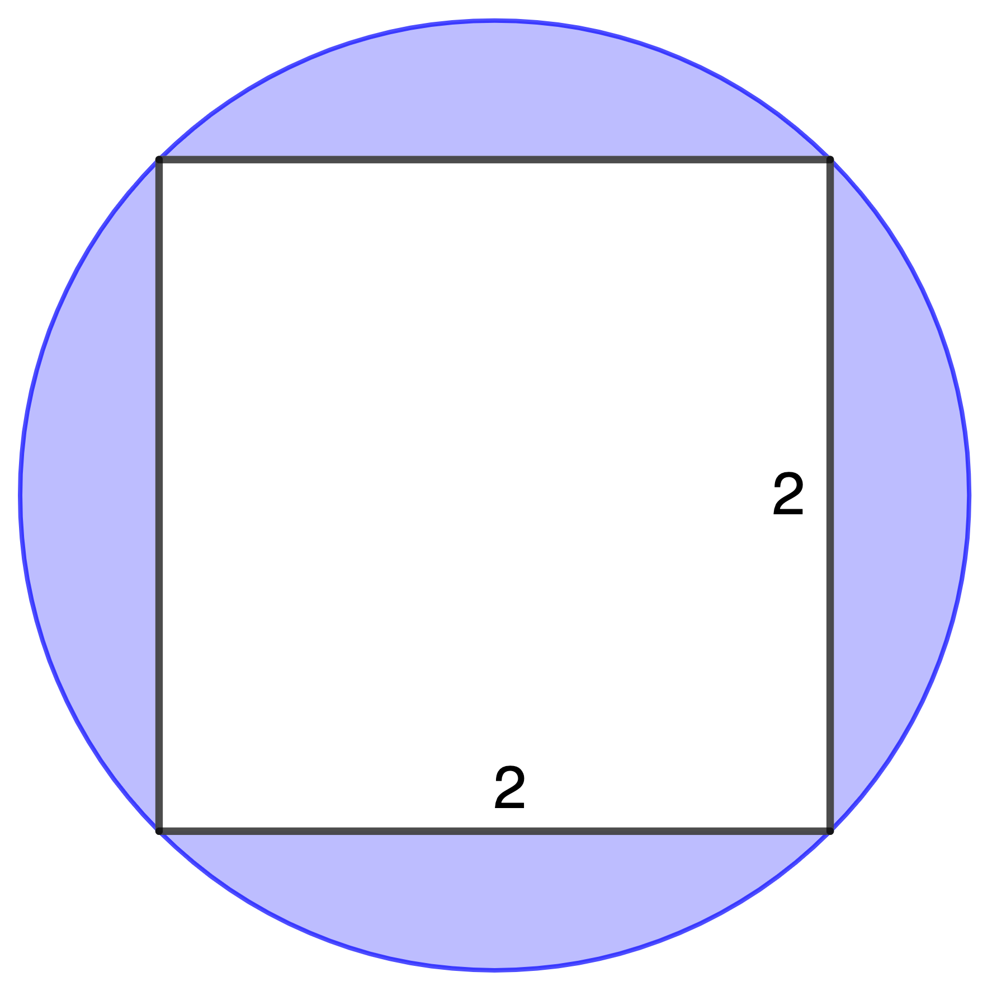
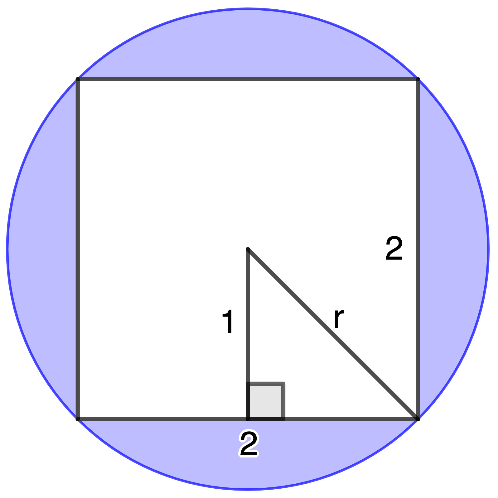
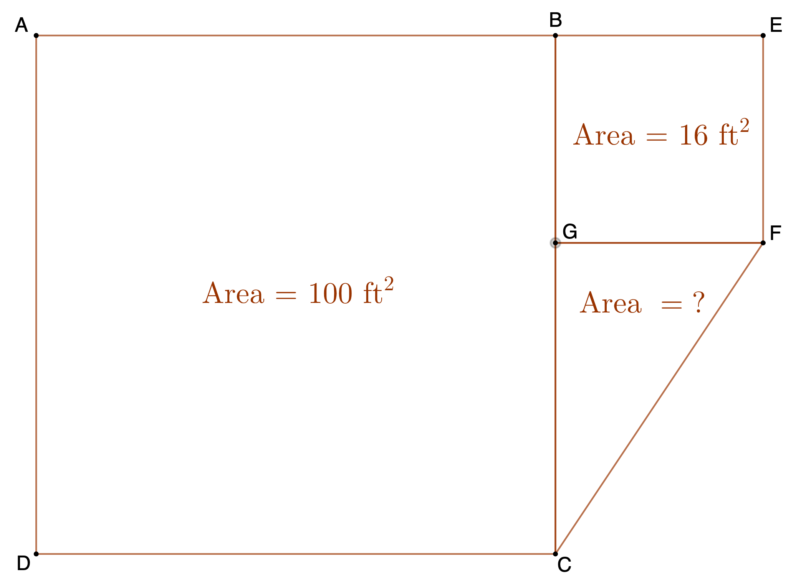
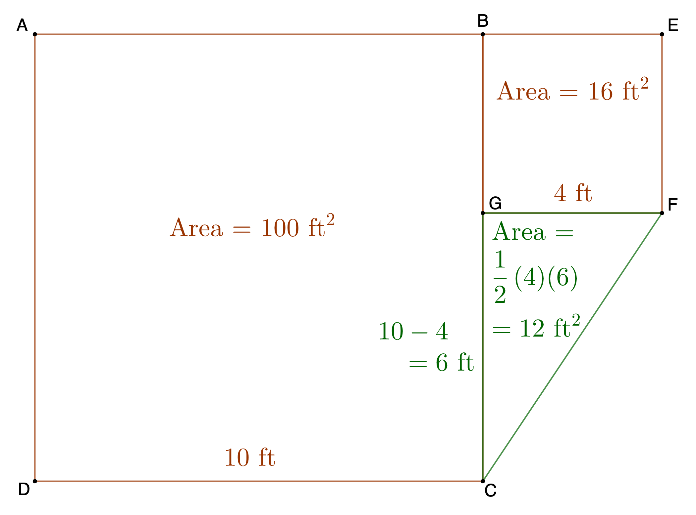
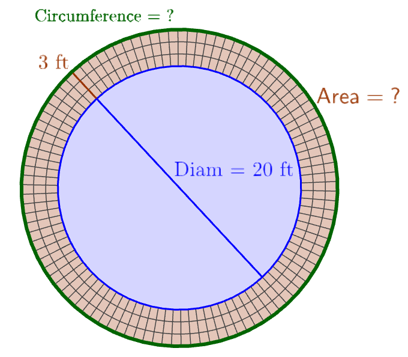

Notes: These solutions are provided as-is,
for informational purposes only, with no warranty of any kind, expressed or implied, including that of correctness, adequacy, and/or suitability for any purpose, whatsoever. Corrections are welcome and should be emailed to selectedsolutionsdotnet@gmail.com.
Though not presented in the text, a blackboard bold
capital \(\mathbb{R}\) is used ubiquitously to represent the set of all real numbers,
and I will use it freely herein (often with the preposition over,
as in the phrase the expression is well-defined over \(\mathbb{R}\),
meaning that it is well-defined—meaning, gives a real-number result—for all real number inputs).
Purple font indicates clicking on the text will return you to your prior place.
| Section 1: Real Numbers | |||||||||
|---|---|---|---|---|---|---|---|---|---|
| 1.4 | 1.8 | 1.14 | 1.20 | 1.22 | 1.26 | 1.30 | 1.36 | 1.44 | 1.48 |
| 1.58 | 1.76 | 1.84 | 1.92 | 1.98 | 1.102 | 1.110 | |||
| Section 2: Algebra Essentials | |||||||||
| 2.18 | 2.24 | 2.44 | 2.50 | 2.64 | 2.84 | 2.90 | 2.94 | 2.96 | 2.106 |
| 2.118 | 2.136 | 2.138 | 2.142 | 2.148 | 2.152 | 2.160 | 2.162 | 2.163 | |
| Section 3: Geometry Essentials | |||||||||
| 3.34 | 3.36 | 3.40 | 3.44 | 3.46 | 3.48 | 3.50 | |||
| Section 4: Polynomials | |||||||||
| 4.8 | 4.10 | 4.12 | 4.16 | 4.18 | 4.20 | 4.22 | 4.24 | 4.26 | 4.30 |
| 4.36 | 4.40 | 4.46 | 4.60 | 4.64 | 4.76 | 4.80 | 4.88 | 4.92 | 4.100 |
| 4.104 | |||||||||
| Section 5: Factoring Polynomials | |||||||||
| 5.8 | 5.14 | 5.22 | 5.32 | 5.34 | 5.38 | 5.40 | 5.50 | 5.56 | 5.60 |
| 5.64 | 5.68 | 5.70 | 5.74 | 5.78 | 5.86 | 5.94 | 5.102 | 5.110 | 5.116 |
| 5.122 | 5.128 | 5.132 | |||||||
| Section 6: Synthetic Division | |||||||||
| Section 7: Rational Expressions | |||||||||
| 7.8 | 7.12 | 7.16 | 7.20 | 7.26 | 7.34 | 7.44 | 7.48 | 7.52 | 7.56 |
| 7.60 | 7.68 | 7.70 | 7.72 | 7.76 | 7.80 | 7.84 | 7.86 | 7.92 | 7.94 |
| Section 8: n-th Roots; Rational Exponents | |||||||||
| 8.14 | 8.18 | 8.22 | 8.26 | 8.30 | 8.34 | 8.38 | 8.42 | 8.46 | 8.50 |
| 8.54 | 8.58 | 8.62 | 8.66 | 8.70 | 8.74 | 8.76 | 8.82 | 8.88 | 8.92 |
| 8.96 | 8.102 | 8.106 | 8.112 | ||||||
1.4) “The product of 5 and \(x+3\) equals 6” may be written as ______.
Sln: Product
means multiplication
so The product of 5 and \(x+3\) equals 6
may be written as \(\boxed{5(x+3) = 6}\)
1.8) True or False No real number is both rational and irrational.
Sln: An irrational number is defined as a number that is not rational, so \(\boxed{\text{True}}\), no number is both rational and irrational.
Use \(U = \{0,1,2,3,4,5,6,7,8,9\} = \) universal set, \(A = \{1,3,4,5,9\}, B = \{2,4,6,7,8\}\), and \(C = \{1,3,4,6\}\) to find each set.
1.14) \((A \cap B) \cup C\)
Sln: \((A \cap B) = \) everything that’s in both \(A\) and \(B\) so \((A \cap B) = \{4\}\), so \((A \cap B) \cup C = \{4\} \cup C = \) everything that’s in \(\{4\}\) or in \(C\) (or both) so \(\{4\} \cup C = \{1,3,4,6\} = C\), so \((A \cap B) \cup C = \boxed{C}\). (In this particular case: it is certainly not generally true that \((A \cap B) \cup C = C\), which I emphasize because there are similar-looking statements about \(\cap\) and \(\cup\)—called identities—which are always true.)
1.20) \(\overline{B} \cap \overline{C}\)
Sln: \(\overline{B} = \) everything in \(U\) but not in \(B\) so \(\overline{B} = \{0,1,3,5,9\}\); similarly, \(\overline{C} = \{0,2,5,7,8,9\}\); and \(\overline{B} \cap \overline{C} = \) everything that’s in both \(\overline{B}\) and \(\overline{C}\) so finally \(\overline{B} \cap \overline{C} = \boxed{\{0,5,9\}}\).
In 22 & 26, list the numbers in each set that are: a) Natural numbers, b) Integers, c) Rational numbers, d) Irrational numbers, and e) Real numbers.
1.22) \(B = \displaystyle \left\{-\frac{5}{3}, 2.\overline{06}, 1.25, 0, 1, \sqrt5\right\}\)
Sln: It’s actually easiest to work backwards:
e) They’re all real numbers.
d) \(\sqrt5\) is the only irrational number in the set (a proof is certainly possible here, but we will be providing, in a later problem, a model for how one goes about proving it, so we will not provide a proof for \(\sqrt5\) here).
c) Everything in the set except \(\sqrt5\) is rational: \(-\frac53\) can be expressed as the ratio of the integers \(-5~\&~3; 0~\&~1\) can be expressed as the ratio of the integers \(0~\&~1\) and \(1~\&~1\), respectively; \(1.25\) can be expressed as the ratio of \(125~\&~100\); and \(2.\overline{06} = 2 + \frac2{33}\) which can be expressed as the ratio of \(68\) to \(33\) (after we’ve reviewed elementary algebra, we’ll be able to review how I found this last ratio; until then, you can perform the division \(\frac{68}{33}\) on a calculator to confirm; note that all we had to do was name any pair of integers whose ratio is the given number: we do not need to name the
pair, because any such pair is not unique—there are always an infinite number of pairs of integers whose ratio equals any given rational number; this is why the definition of rational numbers is stated the way it is, even though that phrasing is, admittedly, somewhat awkward).
b) \(0~\&~1\) are the only integers in the set.
a) Using the definition in the text—which is the definition I learned—the only natural number in the set is \(1\) (however, unfortunately, unanimity in the mathematical community about the status of 0
appears to be lacking: see, e.g., https://www.quora.com/Does-the-set-of-Natural-Numbers-include-zero?q=Is%20zero%20a%20natural%20number; note: ordinarily I wouldn’t cite a Quora thread as authoritative, but in light of it, I did my own research, and I confirmed independently that whether 0 is a natural number or not depends on which mathematician you ask).
1.26) \(F = \displaystyle \left\{-\sqrt2, \pi + \sqrt2, \frac12+10.3\right\}\)
Sln: e) Again, they’re all real numbers (until we learn about complex numbers, all the numbers we deal with are real numbers).
d) \(-\sqrt2\) and \(\pi + \sqrt2\) are the irrational numbers in the set: \(-\sqrt2\) because it is a (non-zero) rational number, \(-1\), times an irrational number, \(\sqrt2\), and such a product is always irrational (Proof: suppose \(a \ne 0\) rational, \(b\) irrational, and suppose their product \(ab\) is rational. First note that \(ab\) can’t be the rational number 0 (why, exactly?) Now, \(a \ne 0\) rational means there exist integers \(m, n\), both \(\ne 0\) such that \(a=m/n\), so \(ab = (mb)/n\). If, as supposed, \(ab\) is rational, that means there exist integers \(M, N\), again both \(\ne 0\), such that \(ab = M/N = (mb)/n\). Since both \(m~\&~n \ne 0\), we may multiply this last equality through by \(n/m\), yielding \(b=(nM)/(mN)\); but both \(nM\) and \(mN\) are integers (why, exactly?), so this last equation says that, contrary to our supposition, \(b\) is rational. Thus we conclude that, self-consistently,
we can’t have all three conditions—\(a \ne 0\) rational, \(b\) irrational, \(ab\) rational—hold simultaneously; so if the first two hold, \(ab\) can’t be rational, which, by definition, makes it irrational \(\blacksquare\) (= proven
). Question: did we need to assume \(a \ne 0\)? Why or why not? Hint: is the claim—a rational times an irrational is irrational—still true if the rational number in the claim is zero?)
\(~~~~\)As for \(\pi + \sqrt2\), it is irrational because an irrational plus an irrational is always irrational. (The proof is similar to the proof just given for (rational \(\ne 0\))(irrational) \(=\) irrational: one assumes two numbers, \(a, b\), are irrational, but their sum, \(a+b\), is rational, and follows the implications of the three assumptions until doing so results in a contradiction. That result indicates that one can’t, self-consistently, have all three conditions—\(a, b\) irrational, \(a+b\) rational—simultaneously true; so if the first two are true, \(a+b\) can’t be rational, and thus, by definition, is irrational. This method of proof—assuming the opposite of what you want to prove and showing that doing so ultimately leads to a contradiction, so therefore what you wanted to prove must be true—is called reductio ad absurdum, and is a standard method for proving a number irrational).
c) \(\frac12 + 10.3 = 10.8\) is the only rational number in the set (proof, consisting of finding two integers whose ratio equals \(10.8\), is left to the reader).
b & a) the set contains no integers and no natural numbers.
In Problems 30 & 36, approximate each number: a) rounded and b) truncated to three decimal places. (Note: the text teaches a different method for rounding than the one I was taught, which is called round-half-to-even.
Although I regard round-half-to-even as preferable, especially in science and finance where it is the standard, in order to avoid confusion, I will follow the method given in the text.)
1.30) \(99.05249\)
Sln: a) The third digit after the decimal point is 2 and the next digit is 4, which is less than five, so we round simply by dropping all the digits after the 2, so the answer is \(\boxed{99.052}\). (Note that what we definitely do not do is go all the way to the 9, say oh, 9 is greater than 5, so we round the 4 up to 5, and then there’s a 5 following the 2, so we round that up to 3.
The principle here is that we look at the 249 in isolation, and ask ourselves If that was 249 and I had to round to the nearest hundred, what would that be? Is 249 closer to 200 or 300?
Clearly (hopefully), you see that it is closer to 200 than 300, although, admittedly, not by much; to the smart-aleck who says well, it’s (much) closer to 250 than either 200 or 300, so why don’t we round it to that?
the answer is simply because that is not what we were asked to do: had we been asked to round to four decimal places, then yes, that is what we would do, but no, we were asked to round to three, so the problem becomes equivalent to asking which hundred is 249 closest to?
not which half-hundred is it closest to?
But fair question.)
b) In this case, truncation gives the same result: \(\boxed{99.052}\).
1.36) \(\displaystyle \frac59\)
Sln: a) As a decimal, \(\displaystyle \frac59 = 0.\overline{5}\), so the fourth decimal place is a 5, so the third decimal place, also a five, gets rounded up to 6, so the answer is \(\boxed{0.556}\).
b) However, truncating, we just drop all the digits after the third, so the answer is \(\boxed{0.555}\)
In Problems 44 & 48, write each statement using symbols.
1.44) The product of 2 and \(x\) is the product of 4 and 6.
Sln: Product
means times
or multiply and any form of the verb to be
means equals, so this gets translated as: \[\boxed{2x = (4)(6)}\]
1.48) The quotient 2 divided by x is 6.
Sln: Here the inclusion of the word quotient is actually redundant: the answer is simply: \[\boxed{\frac2x = 6}\]
In Problems 58, 76, & 84, evaluate the expression.
1.58) \(2 \cdot [8 - 3(4 + 2)] - 3\)
Sln: \(2 \cdot [8 - 3(4 + 2)] - 3 = 2 \cdot [8 - 3(6)] - 3 = 2 \cdot [8 - 18] - 3 = 2\cdot (-10) - 3 = -20 - 3 = \boxed{-23}\)
1.76) \(\displaystyle \frac2{15} + \frac89\)
Sln: We actually always have a choice when adding (which includes subtracting) fractions: we can do it like this:
\(\displaystyle \frac2{15} + \frac89 = \left(\frac99\right)\left(\frac2{15}\right) + \left(\frac{15}{15}\right)\left(\frac89\right) = \frac{18}{135} + \frac{120}{135} = \frac{138}{135}\), which is correct, but leaves us needing to reduce
: \[\frac{138}{135} = \frac{3(46)}{3(45)} = \boxed{\frac{46}{45}}\]
or we can find the least common denominator
(LCD) = least common multiple (LCM) of the denominators: \(15 = (3)(5), 9 = 3^2\), so the LCM is \((3^2)(5) = (9)(5) = 45\); and then multiply each fraction by 1
in the form that makes each have that LCD: \(\displaystyle \left(\frac33\right)\left(\frac2{15}\right) + \left(\frac55\right)\left(\frac89\right) = \frac6{45} + \frac{40}{45} = \boxed{\frac{46}{45}}\). The first way saves time and effort at the front end
of the evaluation, but may result in us having to reduce at the end (but not always: can you think of when it won’t? Hint: what does the second way have us doing if the LCM is simply the product of the denominators?); whereas the second way involves more effort at the front end, but we never have to reduce the answer (assuming the summands—the things we’re adding—are in lowest terms
to begin with. Proof?) So you have to ask yourself: do I want to start easy, but then possibly have to find common factors in larger-than-necessary numbers in order to reduce; or do I want to do the work of finding the LCD up front, and end up with an answer I won’t have to reduce? (Me, knowing that both ways work, I always play it by ear
: if I just see
the LCD without too much work, then I’ll do it the second way; but if finding the LCD is going to be troublesome, I’ll do it the first way and save the factoring—required by both methods—for figuring out what gets cancelled at the end.)
1.84) \(\displaystyle \frac23 + \frac45 \cdot \frac16\)
Sln: Order of operations dictates that we do the multiplication first, then the addition; before we do the multiplication, however, we observe that we can cancel
the common factor of 2 from 4 and 6: \[\frac45 \cdot \frac16 = \frac{2\cdot \cancel2}5 \cdot \frac1{\cancel2\cdot 3} = \frac{(2)(1)}{(5)(3)} = \frac2{15}\]simplifying the addition to:\[\frac23 + \frac2{15}\]
Hopefully the reader has no trouble just seeing
that the least common denominator is 15, so the second fraction doesn’t need to have its appearance modified at all, but we do have to multiply the first fraction by 1
in the form \(\frac55\):\[\frac23 + \frac2{15} = \frac55\cdot\frac23 + \frac2{15} = \frac{10}{15} + \frac2{15}=\frac{10+2}{15} = \frac{12}{15} = \frac{\cancel3\cdot4}{\cancel3\cdot5} = \boxed{\frac45}\]
(There is nothing special
or deep
about having gotten one of the numbers in the problem as the answer to the problem: it is just a coincidence, likely manufactured
intentionally by the textbook problem authors, to see if you’re paying attention
—after we review algebra, we’ll be able to manufacture such problems to our heart’s content. Aw heck, I don’t want to wait: suppose you want to create a problem like this, i.e., you want to create a problem such that \(a+b\cdot c = c\); if you choose any two of the three numbers, algebra enables you to figure out what the third must be. For example, we can solve the equation for \(b\):\[b\cdot c = c - a \implies b = \frac{c-a}c,\]so if we choose \(a\) and \(c\), we can easily calculate the \(b\) required to make \(a+b\cdot c = c\) a true statement. Now you figure out the formulae for \(a\) in terms of \(b\) and \(c\) and for \(c\) in terms of \(a\) and \(b\) (hint: both formulae contain an explicit 1
), so now you can indeed make up such problems to your heart’s content.)
In Problems 92 and 98, use the Distributive Property to remove the parentheses.
1.92) \(\displaystyle3\left(\frac23x + \frac16\right)\)
Sln: \(\displaystyle3\left(\frac23x + \frac16\right) = a(b+c)\) with the identifications \(a=3, b=\frac23x, c = \frac16\) so we have:\[3\left(\frac23x + \frac16\right) = a(b+c) = ab + ac = \cancel3\left(\frac2{\cancel3}x\right) + \cancel3\left(\frac1{\cancel6 2}\right) = \] \[\boxed{2x + \frac12}\]
1.98) \((x - 4)(x - 2)\)
Sln: \((x - 4)(x - 2) = a(b+c)\) with the identifications \(a=(x-4), b=x, c=-2\) so \((x - 4)(x - 2) = a(b+c) = ab+ac = (x-4)(x)+(x-4)(-2)\); but we still have parentheses, so we need to use the Distributive Property again; I’m not going belabor the identifications stage—this is supposed to be review after all—and you need to be comfortable using the Distributive Property in combination with the Commutative Property of Multiplication, so that the following manipulations should not be bothersome (if they are, at a minimum, you need more review before proceeding):\[(x-4)(x)+(x-4)(-2) = (x)(x)+(-4)(x) + (-2)(x) + (-2)(-4) = x^2 - 4x -2x + 8 = \] \[\boxed{x^2 - 6x + 8}\](where we have used the Distributive Property in reverse
to combine the like terms
\(-2x\) and \(-4x\) into \(-6x\)).
1.102) Explain why \(\displaystyle \frac{4+3}{2+5} \ne \frac42 + \frac35\)
Sln: This one is perhaps more subtle than it appears, because we’re supposed to do division before addition, so exactly why isn’t it true? Because of a convention, i.e., an agreement, made long ago, probably not formally, that in any expression like: \[\frac{a+b+c~+...}{d+e+f~+...}\]
there are understood
parentheses: \[\frac{a+b+c~+...}{d+e+f~+...} = \frac{(a+b+c~+...)}{(d+e+f~+...)}\]
by convention: it’s really no deeper
than that. So \(\displaystyle \frac{4+3}{2+5}\) really means \(\displaystyle \frac{(4+3)}{(2+5)} = \frac77 = 1\), whereas \(\displaystyle \frac42 + \frac35 = \frac{10}5 + \frac35 = \frac{13}5.\)
1.110) Explain why the sum of a rational number and an irrational number must be irrational.
Sln: Suppose \(a\) is rational, \(b\) is irrational, and \(a+b\) is rational. \(a\) rational means there exist integers \(m~\&~n, n \ne 0\) such that \(a = m/n\), and \(a+b\) rational means there exist integers \(M~\&~N, N \ne 0\) such that \(a+b = M/N\). But \(a = m/n\) so \(a+b = M/N = m/n + b \implies b = \displaystyle \frac MN - \frac mn = \frac{Mn - mN}{nN}\); but \(Mn-mN\) and \(nN\) are integers (why, exactly?) so that \(b\) is the ratio of two integers, contrary to our supposition that \(b\) is irrational. Thus, assuming that \(a\) rational, \(b\) irrational, and \(a+b\) rational leads to a contradiction, so all three statements can’t be simultaneously true: if the first two are true, the third can’t be, i.e., \(a+b\) can’t be rational, which, by definition, means that it is irrational.\(~~~\blacksquare\)
2.18) Is \(\sqrt2 \lt, \gt, \) or \(= 1.41\)?
Sln: \(\sqrt2 \gt 1.41\) because \(\left(\sqrt2\right)^2 = 2 \gt 1.9881 = (1.41)^2\).
2.24)
Write \(z\) is negative
as an inequality.
Sln: If \(z\) is negative, then it is less than zero, and not equal to zero (since zero is neither positive nor negative), so this may be translated as either \(\boxed{z \lt 0 \text{ or }0 \gt z}\) (they are equivalent, and thus both are correct).
2.44) Evaluate \(\displaystyle \frac{x+y}{x-y}\) for \(x=-2, y=3\).
Sln: If \(x=-2, y=3\) then \(\displaystyle \frac{x+y}{x-y} = \frac{(-2+3)}{(-2-3)} = \frac1{-5} = \boxed{-\frac15}\)
2.50) Evaluate \(|x|-|y|\) for \(x=3, y=-2\).
Sln: If \(x=3, y=-2\) then \(|x|-|y| = |3|-|-2| = 3 - 2 = \boxed{1}\)
2.64) Which of the following: a) \(x = 3\); b) \(x = 1\); c) \(x = 0\); d) \(x = -1\); are (not) in the domain of \(\displaystyle \frac{-9x^2 - x + 1}{x^3 + x}\)?
Sln: All the operations in the expression—(positive integer) exponentiation, multiplication/division, and addition/subtraction—are well-defined for all real numbers except division when the denominator equals zero, so we just need to determine which of the values in question make \(x^3+x = 0\) (the value of the numerator is irrelevant):
a) \(x=3\): \(x^3+x = (3)^3 + 3 = 27 + 3 = 30 \ne 0\), so \(x=3\) is \(\boxed{\text{in}}\) the domain;
b) \(x=1\): \(x^3+x = (1)^3 + 1 = 1 + 1 = 2 \ne 0\), so \(x=1\) is \(\boxed{\text{in}}\) the domain;
c) \(x=0\): \(x^3+x = (0)^3 + 0 = 0\), so \(x=0\) is \(\boxed{\text{not in}}\) the domain;
d) \(x=-1\): \(x^3+x = (-1)^3 + (-1) = -1 + (-1) = -2 \ne 0\), so \(x=-1\) is \(\boxed{\text{in}}\) the domain.
2.84) Simplify \(\sqrt{(-3)^2}\)
Sln: I’m doing this one because it’s important to understand that we can’t simply cancel
the square-root and the squaring operations (which would give us an answer of \(-3\)), because, since the square-root symbol extends over the squaring operation like so: \(\sqrt{(\cdot)^2}\), there are understood
brackets around the squaring operation shouting do me first,
i.e., the given expression is (to be understood as) equivalent to \(\sqrt{\left[(-3)^2\right]} = \sqrt{[(-3)(-3)]} = \sqrt9\); additionally, the square-root without a sign out in front is understood to be the positive square-root, so \(\sqrt9 = \boxed{3}\) (unambiguously).
In Problems 90 & 94, simplify the expression, expressing the answer so that any remaining exponents are positive (whenever an exponent is 0 or negative, assume that the base is not 0).
2.90) \(\displaystyle \frac{x^{\large-2}y}{xy^{\large2}}\)
Sln: \(\displaystyle \frac{x^{\large-2}y}{xy^{\large2}} = \frac1{x^{\large1-(-2)}y^{\large(2-1)}} = \boxed{\frac1{x^{\large3}y}}\)
2.94) \(\displaystyle \left(\frac{5x^{\large-2}}{6y^{\large-2}}\right)^{\large-3}\)
Sln: Method 1: \(\displaystyle \left(\frac{5x^{\large-2}}{6y^{\large-2}}\right)^{\large-3} = \frac{5^{\large-3}x^{\large(-2)(-3)}}{6^{\large-3}y^{\large(-2)(-3)}} = \boxed{\frac{6^{\large3}x^{\large6}}{5^{\large3}y^{\large6}} = \frac{216x^{\large6}}{125y^{\large6}}}\)
Method 2: \(\displaystyle \left(\frac{5x^{\large-2}}{6y^{\large-2}}\right)^{\large-3} = \left(\frac56\right)^{\large-3}\left(\frac xy\right)^{\large(-2)(-3)} = \boxed{\left(\frac65\right)^{\large3}\left(\frac xy\right)^{\large6} = \frac{216x^{\large6}}{125y^{\large6}}}\)
(Personally, I would accept any of these three equivalent forms of the answer for full credit, but you should consult your instructor to see if s/he has a preference.)
In Problems 96 & 106, find the value of each expression if \(x = 2\) and \(y = -1\).
2.96) \(-3x^{\large-1}y\)
Sln: \(-3x^{\large-1}y\) if \(x = 2\) and \(y = -1\) is \((-3)(2^{\large-1})(-1) = (-3)(\displaystyle\frac12)(-1) = (-\frac32)(-1) = \boxed{\frac32}\)
2.106) \(y^{\large x}\)
Sln: \(y^{\large x}\) if \(x = 2\) and \(y = -1\) is \((-1)^{\large2} = (-1)(-1) = \boxed{1}\)
2.118) Calculate \(-(8.11)^{\large-4}\) and give the answer rounded to three decimal places.
Sln: \(-(8.11)^{\large-4} = (-1)\left((8.11)^{\large-4}\right) \) (not \((-8.11)^{\large-4}\), which is positive) \(\doteq (-1)(2.31162074\times10^{\large-4}) \doteq -0.0002\), which, rounded to three decimal places, is \(\boxed{0}\). (Note that the final answer would be the same if you interpreted this the way I said not to, but that’s only because of the instruction to give the answer rounded to three decimal places: if we were instructed to give the answer rounded to more decimal places, or in scientific notation with any number of significant figures, then the correct answer would be negative, but if you evaluate \((-8.11)^{\large-4}\), you will find that it has the same absolute value, but is positive, i.e., the wrong sign.)
In Problems 136, 138, and 142, express each statement as an equation involving the indicated variables.
2.136)
The perimeter \(P\) of a rectangle is twice the sum of its length \(l\) and its width \(w\).
Sln: Twice
means double,
i.e., two times,
and since it’s twice the sum of,
that tells us we’re supposed to sum, i.e., add before we multiply, so we’re going to need to include parentheses; the proper translation is thus: \[\boxed{P = 2(l+w)}\]
2.138)
The area \(A\) of a triangle is one-half the product of its base \(b\) and its height \(h\).
Sln: A potential difficulty here is omission of the preposition of
between one-half
and the product
: of
means times,
so one has to understand that in English one-half the product
means one-half of the product
; product (also) means times,
so putting this all together the proper translation is: \[\boxed{A = \frac12bh}\]
2.142)
The surface area \(S\) of a sphere is 4 times \(\pi\) times the square of the radius \(r\).
Sln: The square of
is (sort of) an exception to the of = times
rule: the square of \(x\)
is, of course, \(x^2\); with that understanding, the rest of this is translated just as written: \[\boxed{S = 4\pi r^2}\]
2.148)
Write \(x\) is more than 5 units from 2
as an inequality involving absolute value.
Sln: This is saying that the distance between \(x\) and 2, which is given by \(|x-2|\), is greater than 5, so the required inequality is \(\boxed{|x-2| \gt 5}\).
2.152) Normal human body temperature is 98.6° F.\(^1\) A temperature that differs from normal by at least 1.5° F is considered unhealthy. Thus one is considered unhealthy if one’s temperature, \(x\), makes the inequality: \[|x-98.6|\ge1.5\]a true statement.
a) Show that a temperature of 97° F is considered unhealthy;
Sln: \(|97-98.6| = |-1.6| = 1.6 \gt 1.5\), therefore unhealthy
b) Show that a temperature of 100° F is not considered unhealthy.
Sln: \(|100-98.6| = |1.4| = 1.4 \lt 1.5\), therefore not unhealthy
2.160) How long does it take a beam of light to reach Earth from the Sun when the Sun is 93,000,000 miles from Earth; express your answer in seconds, using scientific notation.
Sln: \(9.3\times 10^7~\cancel{\text{miles}}~\times \displaystyle \frac{1\text{ sec }}{1.86\times 10^5~\cancel{\text{miles}}} = \frac{9.3}{1.86} \times 10^2 = \boxed{5.0 \times 10^2\text{ sec}}\) (\(\doteq\) 8.3 min., which is a well-known
fact.)
2.162) Does \(\displaystyle \frac23\) equal 0.666? If not, which is larger? By how much?
Sln: No: \(0.666 = \displaystyle\frac{666}{1000} = \frac{333}{500}\) (in lowest terms
); \(\displaystyle \frac23\) is larger by \(\displaystyle \left(\frac23 - \frac{333}{500}\right) = \frac{2(500)-3(333)}{(3)(500)} = \frac1{1500} = 0.000\overline{6}\), i.e., \(0.666\overline{6} - 0.666\).
2.163)
Is there a positive real number closest
to zero?
Sln: No: for any positive real number we may choose, we can always divide it by 2 and thereby obtain a positive real number still closer
to 0.\(~~~\blacksquare\)
(This is actually pretty deep
: its generalization—that between any two real numbers there always exists another real number, and therefore infinitely many real numbers—is, notably, also true of rational numbers,\(^2\) but not integers—all integers, \(n\), have two equally-close closest
integers, \(n-1\) and \(n+1\)—and this is is one of the important differences between the integers and the rationals and reals.)
3.34) Find the volume, \(V\), and surface area, \(S\), of a sphere of radius 3 feet.
Sln: For a sphere of radius \(r, S = 4\pi r^2\) and \(V = \frac43\pi r^3\) so for a sphere of radius 3 ft., \(S = 4\pi(3\text{ ft.})^2 = \boxed{36\pi\text{ sq. ft.} \doteq 113.1\text{ ft}^2}\) (sq. ft. and \(\text{ft}^2\) are both standard abbreviations for the area unit square-feet,
but in the metric system, one typically uses square-length units expressed as (length-unit)\(^2\), so that is what you will see more often, and that is the notation I will tend to use, even for so-called English
units); and \(V = \frac43\pi (3\text{ ft.})^3 = \frac43 \pi (27\text{ ft}^3) = \boxed{36\pi\text{ ft}^3 \doteq 113.1\text{ ft}^3.}\) (Note: though the surface area and volume of this sphere are numerically equal, they are in no sense whatsoever the same
: \(S\) measures, for example, how much carpet one would need to cover the sphere, whereas \(V\) measures, for example, how much water would be required to fill the sphere—they are physically
two very different quantities, and the fact that they are numerically equal in this particular case is an artificial coincidence manufactured by the author of the text problems; in general, \(S\ne V\), not even numerically.)
3.36) Find the volume, \(V\), and surface area, \(S\), of a right circular cylinder with radius 8 inches and height 9 inches.
Sln: For a right circular cylinder, e.g., a can,
\(S\) (including both the side
of the can and both its top
and bottom
) \(= 2\pi r^2 + 2\pi rh = 2\pi\left[(8\text{ in})^2 + (8\text{ in})(9\text{ in})\right] = 2\pi(8(17))\text{ in}^2 = \boxed{272\pi\text{ in}^2 \doteq 854.5\text{ in}^2}\); and \(V=\pi r^2h = \pi(8\text{ in})^2(9\text{ in}) = \boxed{576\pi\text{ in}^3 \doteq 1809.6\text{ in}^3}\)
3.40) Find the area of the shaded region: 
Sln: The required area is the area of the pictured circle, minus the area of the concentric (meaning with the same center
) inscribed square of side length 2, the latter area being simply \(2^2 = 4\) sq. length units. In order to calculate the area of the circle, \(\pi r^2\), we need to know \(r^2\); because a segment drawn from the center of the circle to one of the corners of the square is a radius of the circle (why?), and because the square and the circle are concentric, such a segment is the hypotenuse of an isosceles right triangle of leg length \(1\), as illustrated in the following diagram: 
(make sure you understand why the triangle is a right triangle; why it is an isosceles triangle; and why the two equal sides have length 1). Thus, by the Pythagorean theorem, \(r^2 = 1^2 + 1^2 = 1 + 1 = 2\), so the area of the circle is \(2\pi\); thus the area of the shaded region is: \[\boxed{2\pi - 4 \doteq 2.283\text{ sq. length units}}\]
3.44) Two triangles are given, one with known side lengths of 10 and 50 length units, included angle (the angle between them) of measure 125°, the angle opposite the side of length 50 has measure 50°, and the other angle has measure 5°; in the other triangle, the length of the side corresponding to the first triangle’s side of length 10, is 8, and the length of the side corresponding to the first triangle’s side of length 50 is unspecified (denoted in the text as \(x\)). Given that the triangles are similar, what is \(x\), and what are the measures of the second triangle’s angles?
Sln: For similar triangles, the ratio of the lengths of corresponding sides is constant, i.e., the same, for each corresponding pair of sides; and corresponding angles are equal. Thus for the second triangle we have:\[\frac{x}{50} = \frac8{10} = \frac45 \implies x = \frac45(50) = \boxed{40\text{ length units}}\]
and the angle between the sides of length 40 and 8 (labeled \(B\) in the text) is \(\boxed{125^{\circ}}\), the angle opposite the side of length 40 (labeled \(A\) in the text) is \(\boxed{50^{\circ}}\), and the other angle (labeled \(C\)) is \(\boxed{5^{\circ}}\)
3.46) How many revolutions will a circular disk with a diameter of 4 feet have completed after it has rolled 20 feet?
Sln: Such a disk has a circumference of \(4\pi\) ft, which is thus how far it rolls in one revolution (assuming no slipping) so:\[20\cancel{\text{ ft}} \times \frac{1\text{ rev}}{4\pi\cancel{\text{ ft}}} = \boxed{\frac5{\pi} \doteq 1.592\text{ rev.}}\]
3.48) Refer to the figure. Square \(ABCD\) has an area of 100 square feet; square \(BEFG\) has an area of 16 square feet. What is the area of the triangle \(CGF\)?

Sln: Since the area of square \(ABCD\) is 100 ft\(^2\), the length of each of its sides is 10 ft; likewise, the length of each of square \(BEFG\)’s sides is 4 ft., meaning leg \(GF\) of triangle \(CGF\) is 4 ft; from the figure we see that leg \(CG\) has length \(\overline{BC} - \overline{BG} = 10 - 4 = 6\) ft; thus the area of triangle \(CGF\) is \(\displaystyle \frac12{4}(6) = \) \[\boxed{12\text{ ft}^2}\]

3.50) A circular swimming pool, 20 feet in diameter, is enclosed by a wooden deck that is 3 feet wide (see figure).

a) What is the area of the deck?
Sln: The area of the deck is the area of the outer circle (which includes the area of the inner circle) \(= \pi\displaystyle \left(\frac{20}2 + 3\right)^2 = 13^2\pi = 169\pi\) ft\(^2\), minus the area of the inner circle \(= \pi\displaystyle \left(\frac{20}2\right)^2 = 100\pi\) ft\(^2\), giving: \[\boxed{69\pi \doteq 216.8\text{ ft}^2}\]
b) How much fence is required to enclose the deck?
Sln: Fence is measured in length units, in this case feet, so what is required is the distance around
the outer circle, i.e., its circumference, which is equal to \(\pi d = \pi(20+2(3)) =\) \[\boxed{26\pi \doteq 81.7\text{ ft}}\]
In Problems 8, 10, 12, and 16: is the given expression a monomial? If so, specify the variable(s), the coefficient, and the degree; if not, state why not. (Note: all the expressions below are valid algebraic expressions; it’s just that some don’t meet our particular requirements for calling an algebraic expression a monomial or polynomial: all mo-/poly-nomials are algebraic expressions, but not all algebraic expressions are mo-/poly-nomials.)
4.8) \(-4x^2\)
Sln: Yes: the variable is \(x\), the coefficient is \(-4\), and the degree is \(2\).
4.10) \(-2x^{-3}\)
Sln: No: the exponent, \(-3\), is not a nonnegative integer.
4.12) \(5x^2y^3\)
Sln: Yes: the variables are \(x~\&~y\), the coefficient is \(5\), and the degree is \(2+3=5\).
4.16) \(3x^2 + 4\)
Sln: No: the expression contains a(n unsimplifiable) sum.
In Problems 18 - 26 (even numbered), state whether the expression is a polynomial; if it is, give its degree; if not, state why not.
4.18) \(1 - 4x\)
Sln: Yes: \(1 - 4x = -4x^1 + 1\) so it is a sum of monomials, and its degree is \(\boxed{1}\). (It is important to understand that just because a polynomial is not written in standard form doesn’t mean it is not a polynomial.)
4.20) \(-\pi\)
Sln: Yes: this is a constant polynomial (\(\pi\) is always understood to be the constant ratio of a circle’s circumference to its diameter, never a variable, and \(-\pi\) is just the additive inverse of that ratio, i.e., a real number, as valid a number as \(-5, -0.2, -3.452\times10^{33}\), etc.), so its degree is \(\boxed{0}\).
4.22) \(\displaystyle \frac3x + 2\)
Sln: No: \(\displaystyle \frac3x = 3x^{-1}\), which is not a monomial, so the sum is not a polynomial.
4.24) \(10z^2 + z\)
Sln: Yes: the use of \(z\) instead of \(x\) does not make this expression not a polynomial; its degree is \(\boxed{2}\)
4.26) \(\displaystyle \frac{3x^3 + 2x - 1}{x^2 + x + 1}\)
Sln: No: this is a ratio of polynomials, which is called a rational expression. (It is possible that, if the denominator is a factor of the numerator, so that it could be cancelled out,
the expression could be simplified to a polynomial, but in this instance, that is not the case, and in any event, the expression as given is not a polynomial.)
In Problems 30, 36, 40, and 46, add, subtract, or multiply, as indicated; express your answer as a single polynomial in standard form.
4.30) \((x^2 - 3x - 4) - (x^3 - 3x^2 + x + 5)\)
Sln: \((x^2 - 3x - 4) - (x^3 - 3x^2 + x + 5) = x^2 - 3x - 4 + (-1)(x^3 - 3x^2 + x + 5) = x^2 - 3x - 4 - x^3 + 3x^2 - x - 5 = \) \(-x^3 + x^2 + 3x^2 - 3x - x - 4 - 5 = -x^3 + (1+3)x^2 - (3+1)x - (4+5) =\) \[\boxed{-x^3 + 4x^2 - 4x - 9}\]
4.36) \(8(4x^3 - 3x^2 - 1) - 6(4x^3 + 8x - 2)\)
Sln: \(8(4x^3 - 3x^2 - 1) - 6(4x^3 + 8x - 2) = 32x^3-24x^2-8 - 24x^3-48x+12 = (32-24)x^3 - 24x^2 - 48x + (12-8) =\) \[\boxed{8x^3-24x^2-48x+4}\]
4.40) \(8(1 - y^3) + 4(1 + y + y^2 + y^3)\)
Sln: \(8(1 - y^3) + 4(1 + y + y^2 + y^3) = 8-8y^3 + 4+4y+4y^2+4y^3 = (-8+4)y^3+4y^2+4y+(8+4) =\) \[\boxed{-4y^3+4y^2+4y+12}\]
4.46) \((2x - 3)(x^2 + x + 1)\)
Sln: \((2x - 3)(x^2 + x + 1) = (2x-3)x^2 + (2x-3)x + (2x-3)(1) = (2x)x^2 - 3x^2 + (2x)x - 3x +(2x)(1) - 3(1) =\) \(2x^3 + (-3+2)x^2 + (-3+2)x - 3 = \) \[\boxed{2x^3 - x^2 - x - 3}\]
In Problems 60 and 64, multiply the polynomials using the FOIL method; express your answer as a single polynomial in standard form.
4.60) \((-2x - 3)(3 - x)\)
Sln: \((-2x - 3)(3 - x) = (-2x)(3) + (-2x)(-x) + (-3)(3) + (-3)(-x) = -6x + 2x^2 - 9 + 3x = \) \[\boxed{2x^2 - 3x - 9}\]
4.64) \((x - 3y)(-2x+y)\)
Sln: \((x - 3y)(-2x+y) = (x)(-2x) + (x)(y) + (-3y)(-2x) + (-3y)(y) = -2x^2 + xy + 6xy - 3y^2 = \) \[\boxed{-2x^2 + 7xy - 3y^2}\]
In Problems 76, 80, and 88, multiply the polynomials using the special product formulas; express your answer as a single polynomial in standard form.
4.76) \((3x - 4)^2\)
Sln: \((3x - 4)^2 = (a+b)^2 = a^2 + 2ab + b^2\) with the identifications \(a=3x, b = -4\), so \((3x - 4)^2 = (3x)^2 + 2(3x)(-4) + (-4)^2 = \) \[\boxed{9x^2 - 24x + 16}\]
4.80) \((3x + 4y)(3x - 4y)\)
Sln: \((3x + 4y)(3x - 4y) = (a+b)(a-b) = a^2 - b^2\) with the identifications \(a=3x, b=4y\), so \((3x + 4y)(3x - 4y) = (3x)^2 - (4y)^2 =\) \[\boxed{9x^2 - 16y^2}\]
4.88) \((3x - 2)^3\)
Sln: \((3x - 2)^3 = (a+b)^3 = a^3 + 3a^2b + 3ab^2 + b^3\) with the identifications \(a=3x, b = -2\), so \((3x - 2)^3 = (3x)^3 + 3(3x)^2(-2) + 3(3x)(-2)^2 + (-2)^3 = \) \[\boxed{27x^3 - 54x^2 + 36x - 8}\]
In Problems 92, 100, and 104, find the quotient and the remainder; check your answer by verifying that (Quotient)(Divisor) + Remainder = Dividend.
4.92) \(x^2~\overline{)~3x^3 - x^2 + x - 2}\)
Sln: \(\color{blue}{\text{Blue = "Step 1"}}, \color{violet}{\text{Violet = "Step 2"}},\) and \(\color{red}{\text{Red}}\) is in both steps:
\(\begin{array}{cc} &\!\!\!\!\!\!\!\!\!\!\!\!\!\!\!\!\!\!\!\!\!\color{blue}{3x}~~~\color{violet}{-~1}\\ \color{red}{x^2}&\!\!\!\!\!\overline{)~3x^3 -x^2 + x -2} \\ & \!\!\!\!\!\!\!\!\!\!\!\!\!\!\!\!\!\!\!\!\!\!\!\!\!\!\!\!\!\!\!\!\!\color{blue}{\underline{-3x^3}} \\ & \!\!\!\!\!\!\!\!\!\!\!\!\!\!\!\!\!\color{blue}{0~-x^2} \\ & \!\!\!\!\!\!\!\!\!\!\!\!\!\!\!\!\!\color{violet}{\underline{-~(-\:x^2)}} \\ & \!\!\!\!\!\!\!\!\!\color{violet}{0} \end{array} \)
and since the rest of the dividend has degree less than the divisor, it is the remainder, so the final answer is: \[\boxed{\text{Quotient: }3x-1\text{, Remainder: }x-2}\]
Required check-step: \((3x-1)(x^2) + (x-2) = (3x)(x^2)-1(x^2) + x -2 = 3x^3 - x^2 + x -2~\checkmark\)
4.100) \(x - 1\overline{)~-3x^4 - 2x - 1}\)
Sln: \(\color{blue}{\text{Blue = "Step 1"}}, \color{violet}{\text{Violet = "Step 2"}}, \color{darkgreen}{\text{Green = "Step 3"}}, \color{brown}{\text{Brown = "Step 4"}},\) and \(\color{red}{\text{Red}}\) is involved in all steps:
\(\begin{array}{cc} &\!\!\!\!\!\!\!\!\!\!\!\!\!\color{blue}{-~3x^3}\;\color{violet}{-~3x^2}~\color{darkgreen}{-~3x}~~~\color{brown}{-\:5}\\ \color{red}{x-1}&\!\!\!\!\!\overline{)~-3x^4 + 0x^3 + 0x^2 -2x -1} \\ & \!\!\!\!\!\!\!\!\!\!\!\!\!\!\!\!\!\!\!\!\!\!\!\!\!\!\!\!\!\!\!\!\!\!\!\!\!\!\color{blue}{\underline{-(-3x^4 + 3x^3)}} \\ & \!\!\!\!\!\!\!\!\!\color{blue}{-\:3x^3 \:+ 0x^2} \\ & \!\!\!\!\!\!\!\!\!\!\!\color{violet}{\underline{-(-3x^3 ~~+ 3x^2)}} \\ &~~~~~~~~~~~~\:\color{violet}{-3x^2 -2x} \\ &~~~~~~~~~~\,\color{darkgreen}{\underline{-(-\,3x^2 + 3x)}} \\ &~~~~~~~~~~~~~~~~~~~~~~~~~~~~~~\:\color{darkgreen}{-~5x -1} \\ &~~~~~~~~~~~~~~~~~~~~~~~~~~~\:\color{brown}{\underline{-(-\,5x + 5)}} \\ &~~~~~~~~~~~~~~~~~~~~~~~~~~~~~~~~~~~~~~~\color{brown}{-\:6} \end{array}\)
So the quotient is \(\boxed{-3x^3 - 3x^2 - 3x - 5}\) with a remainder of \(\boxed{-6}\)
Check: \((-3x^3 - 3x^2 - 3x - 5)(x-1) - 6 = -3x^4 \color{blue}{- \cancel{3x^3}} \color{red}{- \cancel{3x^2}}\) \(-~5x \color{blue}{+ \cancel{3x^3}} \color{red}{+ \cancel{3x^2}}\) \( +~3x + 5 - 6 = \) \(-3x^4 - 2x - 1~\checkmark\)
4.104) \(x - a\overline{)~x^5 - a^5}\)
Sln: \(\color{blue}{\text{Blue = "Step 1"}}, \color{violet}{\text{Violet = "Step 2"}}, \color{darkgreen}{\text{Green = "Step 3"}}, \color{brown}{\text{Brown = "Step 4"}}, \color{black}{\text{Black = "Step 5"}},\) and \(\color{red}{\text{Red}}\) is involved in all steps:
\(\begin{array}{cc} &\!\!\!\!\!\!\!\!\!\!\!\!\!\color{blue}{x^4}~\,\color{violet}{+\:a\:x^3}~\color{darkgreen}{+\,a^2x^2}~\color{brown}{+~a^3x}~\,\color{black}{+~a^4}\\ \color{red}{x - a} & \!\!\!\!\!\overline{)~x^5 \,+ 0\,x^4 + 0~x^3 + 0\:x^2 + 0x - a^5} \\ &\!\!\!\!\!\!\!\!\!\!\!\!\!\!\!\!\!\!\!\!\!\!\!\!\!\!\!\!\!\!\!\!\!\!\!\!\!\!\!\!\!\!\!\!\!\!\!\!\!\!\!\!\!\!\!\!\!\!\!\color{blue}{\underline{\;\,-(x^5-a\,x^4)}} \\ &\!\!\!\!\!\!\!\!\!\!\!\!\!\!\!\!\!\!\!\!\!\!\!\!\!\!\!\color{blue}{a\,x^4 \,+ \,0~x^3}\\ &\!\!\!\!\!\!\!\!\!\!\!\!\!\!\!\!\!\!\!\!\!\!\!\!\!\!\!\!\!\!\!\color{violet}{\underline{-(a\,x^4 \,- a^2x^3)}}\\ &~~~\color{violet}{a^2x^3\!+0~~x^2}\\ &\color{darkgreen}{\underline{-(a^2x^3 \!- a^3x^2)}}\\ &~~~~~~~~~~~~~~~~~~~~~~~\color{darkgreen}{a^3x^2 + 0~x}\\ &~~~~~~~~~~~~~~~~~~~~~\color{brown}{\underline{-(a^3x^2 - a^4x)}}\\ &~~~~~~~~~~~~~~~~~~~~~~~~~~~~~~~~~~~~~~~~~~~~~\color{brown}{a^4x - a^5}\\ &~~~~~~~~~~~~~~~~~~~~~~~~~~~~~~~~~~~~~~~~~~\color{black}{\underline{-(a^4x - a^5)}}\\ &~~~~~~~~~~~~~~~~~~~~~~~~~~~~~~~~~~~~~~~~~~~~~~~~~~~~~~\color{black}{0}\\ \end{array}\)
Quotient: \(\boxed{x^4+ax^3+a^2x^2+a^3x+a^4}\), Remainder: \(\boxed{0}\)
Check: \((x^4+ax^3+a^2x^2+a^3x+a^4)(x-a) + 0 = x^5 \color{blue}{+ \cancel{ax^4}} \color{violet}{+ \cancel{a^2x^3}} \color{darkgreen}{+ \cancel{a^3x^2}} \color{brown}{+ \cancel{a^4x}} \color{blue}{- \cancel{ax^4}} \color{violet}{- \cancel{a^2x^3}} \color{darkgreen}{\cancel{- a^3x^2}} \color{brown}{\cancel{- a^4x}} \color{black}- a^5~\checkmark\)
General Note: in principle, factoring always has a check step
: multiplying the factorization out and simplifying so as to confirm that one gets back what one started with (unfortunately, this doesn’t verify that you factored the expression completely, but at least, assuming the result of this step matches the original expression, it confirms that you obtained a correct factorization); most of the time, however, we shall leave this step to the reader.
In Problems 8 and 14, factor each polynomial by removing the common monomial factor.
5.8) \(ax-a\)
Sln: \(ax-a = ax - a(1) =\) \[\boxed{a(x-1)}\]
5.14) \(60x^2y - 48xy^2 + 72x^3y\)
Sln: The greatest common factor (GCF) of the coefficients is 12, the maximum powers of \(x\) and \(y\) which occur in all three terms is 1 for each, so the GCF of the three terms is \(12xy\). Factoring this out of \(60x^2y\) leaves
\(5x\); out of \(-48xy^2\) leaves \(-4y\); and out of \(72x^3y\) leaves \(6x^2\). Therefore, the factorization (written in standard form) is: \[\boxed{12xy(6x^2 + 5x - 4y)}\]
In Problems 22, 32, 34, 38, 40, and 50, completely factor the polynomial using the most appropriate method.
5.22) \(36x^2 - 9\)
Sln: Step 1 should always be to factor out a GCF if there is one, and in this case there is, namely 9: \(36x^2 - 9 = 9(4x^2 - 1)\). Now we’re to recognize that \((4x^2 - 1) = (2x)^2 - (1)^2 = a^2 - b^2 = (a+b)(a-b)\) with the identifications \(a=2x, b=1\), so \((4x^2 - 1) = (2x+1)(2x-1)\) giving: \[\boxed{9(2x+1)(2x-1)}\]as the complete factorization of \(36x^2 - 9.\)
5.32) \(25x^2 + 10x + 1\)
Sln: The GCF of all three terms is 1, so we proceed to see if this expression matches any of our special forms
; indeed it does: \(25x^2 + 10x + 1 = (5x)^2 + 2(5x)(1) + (1)^2 = a^2 + 2ab + b^2 = (a+b)^2\) with the identifications \(a=5x, b=1\), so \(25x^2 + 10x + 1=\) \[\boxed{(5x+1)^2}\]
5.34) \(x^3+125\)
Sln: Again the GCF is 1 so again we check to see if this matches one of our special forms; since \(x^3\) is a perfect cube,
we check to see if \(125\) is also; since it ends in \(5\), if it is a perfect cube of something, that something has to end in \(5\) (why?), so we first check \(5^3\) and sure enough find that it equals \(125\). Thus \(x^3+125 = (x)^3 + (5)^3 = a^3 + b^3 = (a+b)(a^2-ab+b^2)\) with the identifications \(a=x, b=5\), so \(x^3+125 = \) \[\boxed{(x+5)(x^2-5x+25)}\]
5.38) \(64-27x^3\)
Sln: GCF = 1, \(64 = 4^3, 27x^3 = (3x)^3\) so \(64-27x^3 = a^3 - b^3 = (a-b)(a^2+ab+b^2)\) with the identifications \(a=4, b=3x\), so \(64-27x^3 = (4-3x)(16+12x+9x^2)\) or, in standard form: \[\boxed{-(3x-4)(9x^2+12x+16)}\](If you prefer, you can factor out the \(-1\) at the beginning so as to not have to factor it out at the end, or not factor it out at all, but in that last case you have to be prepared to recognize \((4-3x)~\&~(3x-4)\) as the negatives of one another, because when we get to Section 7, Rational Expressions,
you’ll be expected to be able to reduce
fractions like \(\displaystyle \frac{4-3x}{3x-4} = \frac{3x-4}{4-3x} = -1\).)
5.40) \(x^2+6x+8\)
Sln: GCF = 1 and this doesn’t match any of our special forms (e.g., 8 is not the perfect square of an integer; perfect cube, yes, but that doesn’t help us here). Since the coefficient of the \(x^2\) term is 1, if this factors, the result will have the form \((x+a)(x+b)\), with \(ab = 8\) and \(a+b = 6\), i.e., we need two integers that multiply to 8 and add to 6; moreover, since both of the coefficients are positive, we know that \(a~\&~b\) must be as well (make sure you understand why; hint: what other combination of \(a,b\) could result in \(ab \gt 0\); if that were the case, what would be the sign of \(a+b\)?) Thankfully, 8 only has two positive factor pairs—1 & 8, and 2 & 4—so without too much effort we see that \(x^2+6x+8 =\) \[\boxed{(x+2)(x+4)}\]
5.50) \(x^2+2x-8\)
Sln: Same as the one we just did, except that now, since the constant term is negative, one of our pair of factors of 8 must be negative, with their sum being \((+)2\), i.e., we need two integers that multiply to \(-8\); that differ in absolute value by \(2\); and the larger of the two factors should be the positive one (make sure you understand why). Again without too much effort, we see that \(4~\&~-2\) meet these criteria, so \(x^2+2x-8 = \) \[\boxed{(x-2)(x+4)}\]
5.56) Factor \(9x^2 - 6x + 3x - 2\) by grouping.
Sln: \(9x^2 - 6x + 3x - 2 = (3x)(3x - 2) + (1)(3x - 2) = ac + bc = (a+b)c\) with the identifications \(a=3x, b=1, c=(3x-2)\), so \(9x^2 - 6x + 3x - 2 = \) \[\boxed{(3x+1)(3x-2)}\]
In Problems 60, 64, and 68, factor each polynomial.
I know: we’re supposed to factor these the hard way,
but we’re going to learn a better way
eventually (if you’re using this text for Precalculus,
you should have already learned it in Algebra II,
and even if you’re using it for Algebra II,
you may have already learned it in Algebra I
) and I hate wasting time
with a trial-and-error method when there exists a non-trial-and-error method that always works.
The method relies on the so-called Zero Principle
(ZP), which states that if a product equals zero, then (at least) one of the factors must equal zero; recall that we rely on the ZP to solve quadratic equations in the form \(ax^2+bx+c=0\) by factoring the left hand side to \(a(x-r)(x-s) = 0\), because the ZP then tells us that either \(x-r=0 \implies x=r\) or \(x-s=0 \implies x=s\) (or both factors equal 0 if \(r=s\)). But the converse of this result is also true: if \(r~\&~s\) are solutions of \(ax^2+bx+c=0\), then \((x-r)~\&~(x-s)\) are factors of \(ax^2+bx+c.\)
Why is this helpful? Well, for quadratics we have a formula for the solutions of \(ax^2+bx+c=0\) that always works: \[x = \frac{-b\pm \sqrt{b^2-4ac}}{2a}\] (even when, later, we get to complex numbers!), i.e., we can always find \(r~\&~s\), and thus write down the factors of \(ax^2+bx+c\) without having to do any trial-and-error with (potentially very long) factor pair lists! I will use the following problems to illustrate this method, which I call the Quadratic Formula Method
(QFM).
5.60) \(6z^2 + 5z + 1\)
Sln: The solutions of \(6z^2 + 5z + 1 = 0\) are \(z = \displaystyle \frac{-5\pm\sqrt{5^2-4(6)(1)}}{2(6)} = \frac{-5\pm\sqrt{25-24}}{12} = \frac{-5\pm\sqrt1}{12} = \frac{-5\pm1}{12} = \frac{-4}{12} = -\frac13\) or \(\displaystyle \frac{-6}{12} = -\frac12\); therefore \(6z^2 + 5z + 1 = a(z-(-\frac13))(z-(-\frac12)) = 6(z+\frac13)(z+\frac12)\), where we have figured out that \(a=6\) because the leading coefficient of the product of the other two factors is 1 (in general, when we use this method, initially the leading coefficient of the factorization will be the same as the coefficient of the quadratic term; proof?) That factorization is fine and correct (check it!), but not traditional
: traditionally, one gets rid of the fractions by a suitable factorization of the leading coefficient (which will always be possible), whose factors are then distributed through the terms necessary to clear
the fractions: \(6(z+\frac13)(z+\frac12) = (3)(2)(z+\frac13)(z+\frac12) = 3(z+\frac13)\cdot 2(z+\frac12) = \) \[\boxed{(3z+1)(2z+1)}\]
(Since we are doing these differently than the book, I will do the check step for these: \(\checkmark: (3z+1)(2z+1) = (3z)(2z) + (3z)(1) + (1)(2z) + (1)(1) = 6z^2 + 3z + 2z + 1 = 6z^2 + 5z + 1~\checkmark\))
5.64) \(3x^2 - 10x + 8\)
Sln: The solutions of \(3x^2 - 10x + 8 = 0\) are \(x=\displaystyle \frac{-(-10)\pm\sqrt{(-10)^2-4(3)(8)}}{2(3)} = \frac{10\pm\sqrt{100-96}}6 = \frac{10\pm\sqrt4}6 = \frac{10+2}6 = 2\) or \(\displaystyle \frac{10-2}6 = \frac43\). Therefore, \(3x^2 - 10x + 8 = 3(x-\frac43)(x-2) = \) \[\boxed{(3x-4)(x-2)}\] \(\checkmark: (3x-4)(x-2) = (3x)(x) + (3x)(-2) + (-4)(x) + (-4)(-2) = 3x^2 - 6x - 4x + 8 = 3x^2 - 10x + 8~\checkmark\)
5.68) \(3x^2 - 10x - 8\)
Sln: The solutions of \(3x^2 - 10x - 8 = 0\) are \(x=\displaystyle \frac{-(-10)\pm\sqrt{(-10)^2-4(3)(-8)}}{2(3)} = \frac{10\pm\sqrt{196}}6 = \frac{10\pm14}6 = \frac{24}6 = 4\) or \(\frac{-4}6 = -\frac23\). Therefore, \(3x^2 - 10x - 8 = 3(x-(-\frac23))(x-4) = \) \[\boxed{(3x+2)(x-4)}\] \(\checkmark: (3x+2)(x-4) = (3x)(x) + (3x)(-4) + (2)(x) + (2)(-4) = 3x^2 -12x +2x -8 = 3x^2 -10x -8~\checkmark\)
Note that no factor pair lists needed to be made, and no trial-and-error was involved!
In Problems 70 and 74, determine the number that should be added to complete the square of each expression; then add it and factor the result.
5.70) \(p^2 + 14p\)
Sln: (When the leading coefficient of the quadratic is 1), the summand required to complete the square is the square of half the linear coefficient; in this case, the linear coefficient is \((+)14\), half of which is \(7\), the square of which is \(\boxed{49}\), so that is what we must add to complete this square. The result: \(p^2 + 14p + 49 = a^2 + 2ab + b^2 = (a+b)^2\) with the identifications \(a=p, b=7\), so \(p^2 + 14p + 49 = \boxed{(p+7)^2}\)
5.74) \(x^2 + \displaystyle \frac13 x\)
Sln: The required summand is \(\displaystyle \left(\frac12 \cdot \frac13\right)^2 = \left(\frac16\right)^2 = \boxed{\frac1{36}}\) and the resulting quadratic trinomial and its factorization are: \[\boxed{x^2+\frac13 x+\frac1{36} = \left(x+\frac16\right)^2}\] \(\checkmark: \left(x+\frac16\right)^2 = x^2 + 2\left(\frac16\right)x + \left(\frac16\right)^2 = x^2 + \frac13 x + \frac1{36}~\checkmark\)
In the remainder of the Problems, factor completely the given polynomial.
5.78) \(3-27x^2\)
Sln: \(3-27x^2 = -3(9x^2-1) = -3(a^2-b^2) = -3(a+b)(a-b)\) with \(a=3x, b=1 \implies 3-27x^2 =\) \[\boxed{-3(3x+1)(3x-1)}\]
5.86) \(x^2+12x+36\)
Sln: You’re supposed to recognize this as a perfect square trinomial, but what if you don’t: can we use the QFM to get the factors? Yes! That’s the point of the QFM: it always works (you can even use it—and will be expected to, perhaps in Calculus, or definitely in some courses you may have to take after that if you intend to go into engineering or one of of the physical sciences, e.g., physics, chemistry, astronomy, etc.—to factor trinomials whose solutions are not rational numbers!) But the outcome of the QFM is a little different than when the trinomial is not a perfect square, so we will do this one using that method to exhibit what happens.
\(x^2+12x+36 = 0 \implies x = \displaystyle \frac{-12\pm\sqrt{(12)^2-4(1)(36)}}{2(1)} = \frac{-12\pm\sqrt{144-144}}2 = \frac{-12\pm\sqrt{0}}2 = \frac{-12\pm0}2 = \frac{-12}2 = -6\): we got only one solution! Does this mean this trinomial has only one factor? No: the case of the discriminant—the quantity under the square-root in the quadratic formula, \(b^2-4ac\)—equaling 0 corresponds precisely with the case of the trinomial being a perfect square: our quadratic formula result tells us that \(x^2+12x+36 = (x-(-6))(x-(-6)) = \) \[\boxed{(x+6)^2}\](which is why we say, you may recall, that the solution \(-6\) has multiplicity 2
).
5.94) \(9x^2-12x+4\)
Sln: The GCF is one, so we proceed immediately to the QFM:
\(9x^2-12x+4 = 0 \implies x = \displaystyle \frac{-(-12)\pm \sqrt{(-12)^2-4(9)(4)}}{2(9)} = \frac{12 \pm \sqrt{144-144}}{18} = \frac{12}{18} = \frac23\): a-ha! one solution: the \(x-\frac23\) factor is repeated, i.e., \(9x^2-12x+4 = 9(x-\frac23)(x-\frac23) = 3(x-\frac23) \cdot 3(x-\frac23) = \) \[\boxed{(3x-2)^2}\]i.e., \(9x^2-12x+4\) is a perfect square trinomial (just like I said it would be whenever the discriminant is zero, and the QFM worked to find the required factorization, without having to recognize that fact).
5.102) \(x^8-x^5\)
Sln: The GCF is \(x^5\) so step one
is to factor that out, yielding: \(x^8-x^5 = x^5(x^{8-5}-1) = x^5(x^3-1)\); \(x^3-1\) is a difference of cubes: \(a^3-b^3 = (a-b)(a^2+ab+b^2)\) with \(a=x, b=1\), so \(x^8-x^5 = \) \[\boxed{x^5(x-1)(x^2+x+1)}\]
5.110) \(4-14x^2-8x^4\)
Sln: The GCF is 2, but we will factor out \(-2\) so that the other factor will be in standard form: \(4-14x^2-8x^4 = -2(4x^4 + 7x^2 - 2)\). \(4x^4\) is a perfect square (of \(2x^2\)) but \(-2\) isn’t, so we know immediately that the second factor can’t be a perfect square trinomial. Furthermore, although it is not a quadratic, it is quadratic in form
: if we let \(x^2 = y \implies x^4 = y^2\), then \(4x^4 + 7x^2 - 2 = 4y^2 + 7y -2\), which we can attempt to factor using the QFM. We have: \(4y^2 + 7y -2 = 0 \implies y = \displaystyle \frac{-7 \pm \sqrt{7^2-4(4)(-2)}}{2(4)} = \frac{-7 \pm \sqrt{49+32}}{8} = \frac{-7 \pm \sqrt{81}}{8} = \frac{-7\pm 9}{8} = \frac28 = \frac14\) or \(\displaystyle \frac{-16}8 = -2\), so \(4y^2 + 7y -2 = 4(y-\frac14)(y-(-2)) = (4y-1)(y+2) = (4x^2-1)(x^2+2)\) upon substituting \(x^2\) back in for \(y\). However, we’re not done yet: \(x^2+2\) is prime
(over \(\mathbb{R}\)), but \(4x^2-1 = a^2-b^2 = (a+b)(a-b)\) with the identifications \(a=2x, b = 1\), so \(4x^2-1 = (2x+1)(2x-1)\). Putting it all together we have: \(4-14x^2-8x^4 = \) \[\boxed{-2(2x+1)(2x-1)(x^2+2)}\] \(\checkmark: -2(2x+1)(2x-1)(x^2+2) = -2(4x^2-1)(x^2+2) = (2-8x^2)(x^2+2) = 2x^2 + 4 - 8x^4 - 16x^2 = 4 - 14x^2 - 8x^4~\checkmark\)
5.116) \((5x+1)^3-1\)
Sln: This is a difference of cubes: \(a^3-b^3 = (a-b)(a^2+ab+b^2)\) with the identifications \(a=(5x+1), b=1\), so \((5x+1)^3-1 = [(5x+1)-1][(5x+1)^2+(5x+1)(1)+1^2] = (5x+1-1)(25x^2+10x+1+5x+1+1) = \) \[\boxed{5x(25x^2 + 15x + 3)}\](To determine if \(25x^2 + 15x + 3\) is prime, we can check the discriminant: \(15^2-4(25)(3) = 225-300 = -75\)—since this is less than zero, \(25x^2 + 15x + 3\) has no real zeros,
and therefore doesn’t factor over \(\mathbb{R}\), much less the set of rationals: it is prime, confirming that our result is the complete factorization, over \(\mathbb{R}\).)
5.122) \(x^4+x^3+x+1\)
Sln: This one is done by grouping: \(x^4+x^3+x+1 = (x^4+x^3) + (x+1) = x^3(x+1) + (1)(x+1) = (x^3+1)(x+1) = (x+1)(x^2-1x+1)(x+1) = \) \[\boxed{(x+1)^2(x^2-x+1)}\](Again, examining the discriminant of \(x^2-x+1: (-1)^2-4(1)(1) = 1-4 = -3\) and finding a negative result confirms that \(x^2-x+1\) is prime, and ours is the complete factorization, over \(\mathbb{R}\).)
5.128) \(4(x + 5)^3(x - 1)^2 + (x + 5)^4 \cdot 2(x - 1)\)
Sln: The GCF is \(2(x-1)(x+5)^3\); factoring that out, we have: \(4(x + 5)^3(x - 1)^2 + (x + 5)^4 \cdot 2(x - 1) = 2(x-1)(x+5)^3[2(x-1) + (x+5)] = 2(x-1)(x+5)^3(2x-2+x+5) = \) \(2(x-1)(x+5)^3(3x+3) = \) \[\boxed{6(x+1)(x-1)(x+5)^3}\] \(\checkmark: 6(x+1)(x-1)(x+5)^3 = 6(x^2-1)(x^3+3(5)x^2+3(5^2)x+5^3) = 6(x^2-1)(x^3+15x^2+75x+125) = \) \(6(x^5 + 15x^4 + 75x^3 +125x^2 - x^3 - 15x^2 - 75x -125) = \\ \boxed{6x^5 + 90x^4 + 444x^3 + 660x^2 - 450x - 750}\\\)
while \(4(x + 5)^3(x - 1)^2 + (x + 5)^4 \cdot 2(x - 1)\) multiplied out =
\((x^3+3(5)x^2+3(5^2)x+5^3)(2x-2)^2 + (2x-2)(x+5)^2(x+5)^2 \\= (x^3+15x^2+75x+125)(4x^2-8x+4) + (2x-2)(x^2+10x+25)^2 \\=
4x^5+(60-8)x^4+(300-120+4)x^3+(500-600+60)x^2+(-1000+300)x+500 + \\ ~~~~~(2x-2)(x^4+2(10)x^3+(100+2(25))x^2 + 2(10)(25)x + 25^2) \\= 4x^5+52x^4+184x^3-40x^2-700x+500 + (2x-2)(x^4+20x^3+150x^2 + 500x + 625) \\=
(4+2)x^5 + (52+40-2)x^4 + (184+300-40)x^3 + (-40+1000-300)x^2 + (-700+1250-1000)x + 500 - 1250 \\ =
\boxed{6x^5 + 90x^4 + 444x^3 + 660x^2 - 450x - 750}~\checkmark\)
5.132) \(3(4x + 5)^2 \cdot 4(5x + 1)^2 + (4x + 5)^3 \cdot 2(5x + 1) \cdot 5\)
Sln: The GCF is \(2(5x+1)(4x+5)^2\); factoring that out gives: \(3(4x + 5)^2 \cdot 4(5x + 1)^2 + (4x + 5)^3 \cdot 2(5x + 1) \cdot 5 = 2(5x+1)(4x+5)^2[3(2)(5x+1) + 5(4x+5)] \\= 2(5x+1)(4x+5)^2(30x+6+20x+25) = \) \[\boxed{2(5x+1)(50x+31)(4x+5)^2}\]
\(\checkmark: 2(5x+1)(50x+31)(4x+5)^2 =
(10x+2)(50x+31)(16x^2+40x+25) \\= (50x+31)(160x^3+(400+32)x^2+(250+80)x+50) = (50x+31)(160x^3+432x^2+330x+50) \\= 8000x^4 + (21600+4960)x^3 + (16500+13392)x^2 + (2500+10230)x + 1550 \\= \boxed{8000x^4+26560x^3+29892x^2+12730x+1550}\\\)
while \(3(4x + 5)^2 \cdot 4(5x + 1)^2 + (4x + 5)^3 \cdot 2(5x + 1) \cdot 5\) multiplied out is:
\(3(4x + 5)^2 \cdot 4(5x + 1)^2 + (4x + 5)^3 \cdot 2(5x + 1) \cdot 5 \\= (16x^2+40x+25)(300x^2+120x+12)+(16x^2+40x+25)(4x+5)(50x+10) \\=
(16x^2+40x+25)[(300+200)x^2+(120+290)x+62] = (16x^2+40x+25)(500x^2+410x+62) \\=
16(500)x^4+[16(410)+40(500)]x^3+[16(62)+40(410)+25(500)]x^2+[40(62)+25(410)]x+25(62) \\=
\boxed{8000x^4+26560x^3+29892x^2+12730x+1550}~\checkmark\)
In my opinion, this is a non-essential skill, especially in this day of ubiquitous, free symbolic algebra calculators (e.g., WolframAlpha, GeoGebra, Desmos), so I am omitting this Section in my initial publication of these solutions. (For the sake of completeness, I will come back to it eventually, but probably not until I’ve finished the rest of the text.)
Note: in general, the kind of problems in this Section and the next do not have a convenient way of checking one’s answer. However, I have confirmed that, in all (tested) cases, WolframAlpha is capable of providing the correct answers (and, if you pay, step-by-step solutions), so I encourage the student to use that resource to
check the answers s/he obtains (I did).
In Problems 8, 12, and 16, reduce
each fraction.
8) \(\displaystyle \frac{15x^2 + 24x}{3x^2}\)
Sln: \(\displaystyle \frac{15x^2 + 24x}{3x^2} = \frac{\cancel{3x}(5x+8)}{\cancel{3x}(x)} = \boxed{\frac{5x+8}x}\) (assuming \(x\ne0\))
12) \(\displaystyle \frac{3y^2 - y - 2}{3y^2 + 5y + 2}\)
Sln: We need to factor the numerator and denominator to see if there are any common factors; since the leading coefficient of each is not 1, this would be a tedious process without what I’ve called the QFM (illustrated above in the Section 5 solutions), so we use that here.
\(3y^2 - y - 2 = 0 \implies y=\displaystyle \frac{-(-1)\pm\sqrt{(-1)^2-4(3)(-2)}}{2(3)} = \frac{1\pm\sqrt{1+24}}6 = \frac{1+5}6 = 1\) or \(\displaystyle \frac{1-5}6 = -\frac23\), so \(3y^2 - y - 2 = 3(y+\frac23)(y-1) = (3y+2)(y-1)\); and \(3y^2 + 5y + 2 = 0 \implies y=\displaystyle \frac{-5\pm\sqrt{5^2-4(3)(2)}}{2(3)} = \frac{-5\pm\sqrt{25-24}}6 = \frac{-5+1}6 = -\frac23\) or \(\displaystyle \frac{-6}6 = -1\), so \(3y^2 + 5y + 2 = 3(y+\frac23)(y+1) = (3y+2)(y+1)\). Therefore, \(\displaystyle \frac{3y^2 - y - 2}{3y^2 + 5y + 2} = \frac{\cancel{(3y+2)}(y-1)}{\cancel{(3y+2)}(y+1)} = \) \[\boxed{\frac{y-1}{y+1}}~(\text{assuming }y \ne -\frac23)\]
16) \(\displaystyle \frac{2x^2 + 5x - 3}{1 - 2x}\)
Sln: Since the leading coefficient of the numerator is positive, we factor out \(-1\) from the denominator (to make it easier to recognize if one of the factors of the top matches the denominator): \[\frac{2x^2 + 5x - 3}{1 - 2x} = -\frac{2x^2 + 5x - 3}{2x-1}\]
Since this will only reduce if \((2x-1)\) is a factor of the numerator, we seek \(ax+b\) such that \((2x-1)(ax+b) = 2x^2 + 5x - 3\); \(2ax^2 = 2x^2 \implies a=1\), and \((-1)b = -3 \implies b=3\) (Check: \((2x-1)(x+3) = 2x^2 + 6x - x - 3 = 2x^2 + 5x - 3~\checkmark\); note that in this instance, since we already knew what one of the factors needed to be, it was easier to find the other factor without using the QFM: this is general—when you have to factor from scratch,
I recommend the QFM, but if you already have one of the factors, I recommend the approach just used.)
Thus, \(\displaystyle \frac{2x^2 + 5x - 3}{1 - 2x} = -\frac{\cancel{(2x-1)}(x+3)}{\cancel{2x-1}} = \boxed{-(x+3)}\) (assuming \(x\ne \frac12\)).
In Problems 20, 26, and 34 perform the indicated operation and simplify the result; leave your answer in factored form.
20) \(\displaystyle \frac{12}{x^2+x}\cdot \frac{x^3+1}{4x-2}\)
Sln: \(\displaystyle \frac{12}{x^2+x}\cdot \frac{x^3+1}{4x-2} = \frac{\cancel{2}(6)\cancel{(x+1)}(x^2-x+1)}{\cancel{2}x\cancel{(x+1)}(2x-1)} = \boxed{\frac{6(x^2-x+1)}{x(2x-1)}}\) (assuming \(x\ne -1\)).
26) \(\displaystyle \large{\frac{\frac{12x}{5x + 20}}{\frac{4x^2}{x^2-16}}}\)
Sln: \(\displaystyle \large{\frac{\frac{12x}{5x + 20}}{\frac{4x^2}{x^2-16}}} \small = \frac{12x}{5x + 20}\frac{x^2-16}{4x^2} = \frac{\cancel{4}(3)\cancel{x}(x-4)\cancel{(x+4)}}{\cancel{4}(5)\cancel{(x + 4)}x^{\cancel{2}1}} = \boxed{\frac{3(x-4)}{5x}}\) (assuming \(x\ne 0, -4\)).
34) \(\displaystyle \large{\frac{\frac{9x^2 + 3x - 2}{12x^2 + 5x - 2}}{\frac{9x^2 - 6x + 1}{8x^2 - 10x - 3}}}\)
Sln: We need the factorizations of each of these polynomials, and when the leading coefficients are not 1, we
use the QFM:
\(9x^2 + 3x - 2 = 0 \implies x = \displaystyle \frac{-3 \pm \sqrt{3^2-4(9)(-2)}}{2(9)} = \frac{-3 \pm \sqrt{9+72}}{2(9)} = \frac{-3 \pm 9}{2(9)} = \frac13\text{ or }-\frac23\), so \(9x^2 + 3x - 2 = 9(x-\frac13)(x+\frac23) = (3x-1)(3x+2)\) (check: \((3x-1)(3x+2) = (3x)^2 + (6 - 3)x - 2~\checkmark\))
\(12x^2 + 5x - 2 = 0 \implies x = \displaystyle \frac{-5 \pm \sqrt{5^2-4(12)(-2)}}{2(12)} = \frac{-5 \pm \sqrt{25+96}}{2^3(3)} = \frac{-5\pm 11}{2^3(3)} = \frac14\text{ or }-\frac{2}{3}\), so \(12x^2 + 5x - 2 = 12(x-\frac14)(x+\frac23) = (4x-1)(3x+2)\) (check: \((4x-1)(3x+2) = (4x)(3x) + (8-3)x -2~\checkmark\))
\(9x^2 - 6x + 1 = 0 \implies x = \displaystyle \frac{6 \pm \sqrt{36-4(9)(1)}}{2(3^2)} = \frac{6 \pm 0}{18} = \frac13\): one solution implies \(9x^2 - 6x + 1\) is a perfect square trinomial so \(9x^2 - 6x + 1 = (3x-1)^2\) (check left to the reader)
\(8x^2 - 10x - 3 = 0 \implies x = \displaystyle \frac{10 \pm \sqrt{100-4(8)(-3)}}{2(8)} = \frac{10 \pm \sqrt{196}}{16} = \frac{10 \pm 14}{16} = \frac32\text{ or }-\frac14\), so \(8x^2 - 10x - 3 = 8(x-\frac32)(x+\frac14) = (2x-3)(4x+1)\) (check: \((2x-3)(4x+1) = (2x)(4x) + (2-12)x - 3 = 8x^2 - 10x - 3~\checkmark\))
So, \(\displaystyle \large{\frac{\frac{9x^2 + 3x - 2}{12x^2 + 5x - 2}}{\frac{9x^2 - 6x + 1}{8x^2 - 10x - 3}}}\small = \frac{\cancel{(3x-1)}\cancel{(3x+2)}}{(4x-1)\cancel{(3x+2)}} \cdot \frac{(2x-3)(4x+1)}{(3x-1)^{\cancel{2}1}} = \boxed{\frac{(2x-3)(4x+1)}{(4x-1)(3x-1)}}\) (assuming \(x \ne -\frac23, \frac13\))
In Problems 44, 48, and 52, perform the indicated operation and simplify the result; leave your answer in factored form.
44) \(\displaystyle \frac6{x - 1} - \frac x{1 - x}\)
Sln: Upon factoring out \(-1\) from the denominator of the second summand, the fractions have the same denominator, so the numerators can be added without modification:
\(\displaystyle \frac6{x - 1} - \frac x{1 - x} = \frac6{x - 1} - \frac x{-1(x-1)} = \frac6{x - 1} + \frac x{x-1} = \boxed{\frac{x+6}{x-1}}\)
48) \(\displaystyle \frac{3x}{x - 4} + \frac{2x}{x + 3}\)
Sln: The LCM of the two denominators is simply their product, so to make the two fractions have a common denominator, we multiply the first summand by 1
expressed as the second denominator divided by itself, and multiply the second summand by 1
expressed as the first denominator divided by itself:
\(\displaystyle \frac{3x}{x - 4} + \frac{2x}{x + 3} = \frac{x+3}{x+3}\left(\frac{3x}{x - 4}\right) + \frac{x-4}{x-4}\left(\frac{2x}{x + 3}\right) = \frac{3x^2+9x + 2x^2-8x}{(x+3)(x-4)} = \boxed{\frac{x(5x+1)}{(x+3)(x-4)}}\) (assuming \(x \ne -3, 4\))
52) \(\displaystyle \frac{x - 1}{x^3} + \frac x{x^2 + 1}\)
Sln: Again, the LCM of the two denominators is simply their product, so we have:
\(\displaystyle \frac{x - 1}{x^3} + \frac x{x^2 + 1} = \frac{x^2+1}{x^2+1}\left(\frac{x - 1}{x^3}\right) + \frac{x^3}{x^3}\left(\frac x{x^2 + 1}\right) = \boxed{\frac{x^4+x^3-x^2+x-1}{x^3(x^2+1)}}\) (assuming \(x \ne 0\); \(x^2+1 \ne 0\) for all real \(x\), so multiplying by \(\displaystyle \frac{x^2+1}{x^2+1}\) is never a problem for all real \(x\); one can confirm that our result does not reduce using long or synthetic division, but determining if the numerator factors (over the rationals) is more difficult, and will have to wait until Chapter 5, Section 5, where that material is taught.)
In Problems 56 and 60, find the LCM of the given polynomials.
56) \(3x^2 - 27, 2x^2 - x - 15\)
Sln: The LCM is found by completely factoring all the expressions of concern, and taking the greatest power of each factor that occurs among the factorizations. Thus we begin by factoring:
\(3x^2 - 27 = 3(x^2-9) = 3(x+3)(x-3)\) and since the LCM will only be less
than simply the product of the two expressions if one of the factors of \(3x^2-27\) is also a factor of \(2x^2 - x - 15\), we’re going to try to factor the latter expression by guessing
that one of its factors is a factor of the former expression, and figuring out what, if anything, the other factor must be; in order to show what happens if we guess wrong,
I’m going to intentionally do that first:
\(2x^2 - x - 15 = (x+3)(ax+b), ax^2 = 2x^2 \implies a=2, 3b=-15, \implies b=-5 \implies 3a+b = 6-15 = -9 \ne -1\), so \((x+3)\) is not a factor;
\(2x^2 - x - 15 = (x-3)(ax+b), ax^2 = 2x^2 \implies a=2, -3b=-15 \implies b=5 \implies -3a+b = -6+5 = -1\), so \(2x^2 - x - 15 = (x-3)(2x+5)\) so the LCM is: \[\boxed{3(x+3)(x-3)(2x+5)}\]
60) \(x^2 + 4x + 4, x^3 + 2x^2, (x + 2)^3\)
Sln: Again, Step 1
is to factor each expression completely:
\(x^2 + 4x + 4 = (x+2)^2\); \(x^3 + 2x^2 = x^2(x+2)\); and \((x+2)^3\) is already factored. The factors are \(x\), the greatest power of which is \(x^2\), and \(x+2\), the greatest power of which is \((x+2)^3\), so the LCM is: \[\boxed{x^2(x+2)^3}\]
In Problems 68, 70, and 72, perform the indicated operations and simplify the result; leave your answer in factored form.
68) \(\displaystyle \frac{2x - 3}{x^2 + 8x + 7} - \frac{x - 2}{(x + 1)^2}\)
Sln: We begin by finding the LCM of \(x^2 + 8x + 7\) and \((x + 1)^2\); since it’s simply their product unless they have a common factor, and \(x+1\) is the only factor (albeit twice) of the second expression, it only matters if \(x+1\) is a factor of \(x^2 + 8x + 7\), so we write \(x^2 + 8x + 7 = (x+b)(x+1)\) and see if there’s a \(b\) such that \(1b=7~\&~b+1=8\) (we know that the coefficient of \(x\) has to be 1; why?); \(1b=7 \implies b=7\) and \(7+1 = 8\), so \(x^2 + 8x + 7 = (x+1)(x+7)\), so the LCM of \(x^2 + 8x + 7\) and \((x + 1)^2\) is \((x+7)(x+1)^2\).
Re-writing the first fraction with the denominator factored: \(\displaystyle \frac{2x-3}{(x+1)(x+7)}\) emphasizes that what we have to multiply the first fraction by to get the LCM common denominator is \(\displaystyle \frac{x+1}{x+1}\) and thus we have:
\(\displaystyle \frac{2x - 3}{x^2 + 8x + 7} - \frac{x - 2}{(x + 1)^2} = \frac{(x+1)(2x-3)}{(x+7)(x+1)^2} - \frac{(x+7)(x-2)}{(x+7)(x+1)^2} = \frac{(2x^2-x-3) - (x^2+5x-14)}{(x+7)(x+1)^2} = \) \[\boxed{\frac{x^2-6x+11}{(x+7)(x+1)^2}}\]
(assuming \(x \ne -1, -7\); we readily confirm that the numerator is prime by checking its discriminant: \((-6)^2-4(1)(11) = 36-44 \lt 0 \implies x^2-6x+11\) is prime).
70) \(\displaystyle \frac x{(x - 1)^2} + \frac2x - \frac{x + 1}{x^3 - x^2}\)
Sln: The first two denominators are already completely factored, and the third \( = x^2(x-1)\), so we see that the only factors are \(x~\&~(x-1)\), and the maximum power to which they both occur is \(2\), so their LCM is \(x^2(x-1)^2\). To get the first fraction to have that denominator we must multiply it by \(\displaystyle\frac{x^2}{x^2}\), the second we must multiply by \(\displaystyle \frac{x(x-1)^2}{x(x-1)^2}\), and the third by \(\displaystyle \frac{x-1}{x-1}\); doing so yields:
\(\displaystyle \frac x{(x - 1)^2} + \frac2x - \frac{x + 1}{x^3 - x^2} = \frac {(x^2)x+2x(x-1)^2-(x-1)(x+1)}{x^2(x - 1)^2} = \frac {x^3+2x(x^2-2x+1)-(x^2-1)}{x^2(x - 1)^2} = \)
\(\displaystyle \frac{x^3+2x^3-4x^2+2x-x^2+1}{x^2(x - 1)^2} = \boxed{\frac{3x^3-5x^2+2x+1}{x^2(x - 1)^2}}\) (assuming \(x\ne0,1\); again, verifying that this doesn’t reduce may be done either by long/synthetic division, or by showing that neither of the zeros of the denominator—0 & 1—are zeros of the numerator (why does that work? hint: what does being a zero of the numerator imply about its factorization?), but determining the factorization (over the integers) of the numerator, if any, is more advanced.)
72) \(\displaystyle \frac1h \left[\frac1{(x + h)^2} - \frac1{x^2}\right]\)
Sln: Note that we can do the subtraction inside the brackets first, and then multiply by \(\displaystyle \frac1h\). The LCM is simply the product of the denominators so we have:
\(\displaystyle \frac1{(x + h)^2} - \frac1{x^2} = \frac{x^2-(x+h)^2}{x^2(x+h)^2} = \frac{x^2-x^2-2hx-h^2}{x^2(x+h)^2} = -\frac{2hx+h^2}{x^2(x+h)^2}\), so \(\displaystyle \frac1h\) times that \(= \displaystyle \boxed{-\frac{2x+h}{x^2(x+h)^2}}\) (assuming \(x\ne0,-h\); if this one seems like it’s out of left field,
it’s one that comes up in Calculus.)
In Problems 76, 80, and 84, perform the indicated operations and simplify the result; leave your answer in factored form.
76) \(\displaystyle \frac{1 - \large\frac x{x+1}}{2 - \large\frac{x - 1}x}\)
Sln: \(\displaystyle {\frac{1 - \large\frac x{x+1}}{2 - \large\frac{x - 1}x}} = \large\frac{\frac{x+1-x}{x+1}}{\frac{2x-(x-1)}{x}} \small = \frac1{x+1} \cdot \frac{x}{x+1} = \boxed{\frac{x}{(x+1)^2}}\) (assuming \(x\ne-1,0\))
80) \(\displaystyle \large{\frac{\frac{2x + 5}x \small- \large\frac x{x - 3}}{\frac{x^2}{x - 3} \small- \large\frac{(x + 1)^2}{x + 3}}}\)
Sln: I like to use what the text calls Method 2
in problems like this: clear the denominators
by multiplying the top
and bottom
by the LCM of all the denominators, which in this case is \(x(x-3)(x+3)\):
\(\displaystyle \large{\frac{\frac{2x + 5}x \small- \large\frac x{x - 3}}{\frac{x^2}{x - 3} \small- \large\frac{(x + 1)^2}{x + 3}}} \cdot \frac{\left(\frac{x(x-3)(x+3)}1\right)}{\left(\frac{x(x-3)(x+3)}1\right)} \small = \large \frac{\frac{2x+5}{\cancel{x}}\frac{\cancel{x}(x-3)(x+3)}1 \small-\large \frac x{\cancel{x - 3}}\frac{x\cancel{(x-3)}(x+3)}1}{\frac{x^2}{\cancel{x-3}}\frac{x\cancel{(x-3)}(x+3)}1 \small-\large\frac{(x + 1)^2}{\cancel{x + 3}}\frac{x(x-3)\cancel{(x+3)}}1} \small = \frac{(2x+5)(x-3)(x+3) - x^2(x+3)}{x^3(x+3) - x(x-3)(x+1)^2}\\= \displaystyle \frac{(x+3)[(2x+5)(x-3) - x^2]}{x^4+3x^3 + (3x-x^2)(x^2+2x+1)} = \frac{(x+3)(2x^2-x^2 + (5-6)x - 15)}{\cancel{x^4}+3x^3 + 3x^3+6x^2+3x - \cancel{x^4}-2x^3-x^2} = \)
\[\boxed{\frac{(x+3)(x^2-x-15)}{x(4x^2+5x+3)}}\]
(assuming \(x\ne 0, \pm3\); note: I don’t usually include the denominator 1
s, I just did here for increased clarity.)
84) \(\displaystyle \frac{4(x + 2)^{-1} - 3}{3(x + 2)^{-1} - 1}\)
Sln: \(\displaystyle \frac{4(x + 2)^{-1} - 3}{3(x + 2)^{-1} - 1} = \frac{4(x + 2)^{-1} - 3}{3(x + 2)^{-1} - 1} \cdot \frac{x+2}{x+2} = \frac{4-3(x+2)}{3-(x+2)} = \frac{4-6-3x}{3-2-x} = \frac{-(3x+2)}{-(x-1)} = \boxed{\frac{3x+2}{x-1}}\) (assuming \(x\ne -2\)).
In Problems 86 and 92, reduce each expression to lowest terms.
86) \(\displaystyle \frac{5(4x + 1) - 4(5x - 2)}{(5x - 2)^2}\)
Sln: If you’re tempted to do this: \(\displaystyle \frac{5(4x + 1) - 4(5x - 2)}{(5x - 2)^2} = \frac{5(4x + 1)}{(5x - 2)^2} - \frac{4\cancel{(5x - 2)}}{(5x - 2)^{\cancel{2}1}} = \frac{5(4x + 1)}{(5x - 2)^2} - \frac4{5x-2}\), you haven’t done anything algebraically wrong, but your result is not a single fraction in lowest terms, and thus you haven’t fulfilled the requirement of the Problem’s instructions.
Rather, since there are understood parentheses
around the subtraction in the numerator, we must simplify that before we even think about reducing:
\(\displaystyle \frac{5(4x + 1) - 4(5x - 2)}{(5x - 2)^2} = \frac{20x+5 - (20x-8)}{(5x - 2)^2} = \frac{5+8}{(5x - 2)^2} = \) \[\boxed{\frac{13}{(5x-2)^2}}\]
where the simplification process did not compel any domain restrictions (the final result has the domain restriction \(x \ne \frac25\), but so did the original expression.)
92) \(\displaystyle \frac{2(x^2 + 9) - 2x(2x - 5)}{(x^2 + 9)^2}\)
Sln: \(\displaystyle \frac{2(x^2 + 9) - 2x(2x - 5)}{(x^2 + 9)^2} = \frac{2x^2+18 - (4x^2-10x)}{(x^2 + 9)^2} = \frac{-2x^2+10x+18)}{(x^2 + 9)^2} = \boxed{-\frac{2(x^2-5x-9)}{(x^2+9)^2}}\) where, again, the simplification process does not compel any domain restrictions, nor are there any inherent in the expression (because \(x^2+9 \ne 0\) for all real \(x\)—why? hint: can you solve \(x^2+9 = 0\) over \(\mathbb{R}\)?) Showing that \(x^2+9\) (which is prime over \(\mathbb{R}\)) is not a factor of \(x^2-5x-9\), i.e., showing that this fraction doesn’t reduce further, may be done either by using long/synthetic division, or by showing that, unlike \(x^2+9\), \(x^2-5x-9=0\) has two real (albeit irrational) solutions (and therefore isn’t prime over \(\mathbb{R}\)).
94) An electrical circuit contains three resistors connected in parallel. If the resistance of each is \(R_1, R_2,\) and \(R_3,\) respectively, their combined resistance, \(R\), is given by the formula: \[\frac1R = \frac1{R_1} + \frac1{R_2} + \frac1{R_3}\] Express \(R\) as a rational expression, and evaluate \(R\) for \(R_1\) = 5 ohms, \(R_2\) = 4 ohms, and \(R_3\) = 10 ohms.
Sln: The LCM of the right-hand-side denominators is \(R_1R_2R_3\), yielding: \[\frac1R = \frac{R_2R_3 + R_1R_3 + R_1R_2}{R_1R_2R_3}\]
Reciprocating both sides gives: \[\boxed{R = \frac{R_1R_2R_3}{R_1R_2 + R_1R_3 + R_2R_3}}\]
Thus if \(R_1\) = 5 ohms, \(R_2\) = 4 ohms, and \(R_3\) = 10 ohms, \[R = \frac{(5)(4)(10)}{(5)(4)+(5)(10)+(4)(10)} = \frac{200}{20+50+40} = \boxed{\frac{20}{11}\text{ ohms}}\]
Except for the initial step of prime factorizing numbers, which I will always leave to the reader,
I am going to begin by doing these in excruciating detail, and commenting on which steps one should eventually be able to skip,
(i.e., do in one’s head or automatically
) but after Problem 38, I am going to do them skipping steps.
Note also that there is typically more than one way to do these, so if your solution doesn’t look like mine, but your answer does, probably nothing to worry about.
In Problems 14 through 42 (every fourth one), simplify each expression; assume that all variables are positive when they appear.
14) \(\large \sqrt[4]{\small48x^5}\)
Sln: \(\large \sqrt[4]{\small48x^5} \small= \large \sqrt[4]{\small(2^4)(3)x^4x} \small = \large \sqrt[4]{\small3}~\large \sqrt[\cancel{4}]{\small2^{\cancel{4}}}\large \sqrt[4]{\small x}~\large \sqrt[\cancel{4}]{\small x^{\cancel4}} \small = \large \sqrt[4]{\small3}~\small(2)\large \sqrt[4]{\small x}~\small (x) = \boxed{2x\large \sqrt[4]{\small3x}}\) (Note: should eventually be able to do it like this: \(\large \sqrt[4]{\small48x^5} \small= \large\sqrt[4]{\small(2^4)(3)x^4x} \small= 2x\large\sqrt[4]{\small3x}\), i.e., the middle two steps should become automatic.
)
18) \(\large \sqrt[3]{\frac{3xy^2}{81x^4y^2}}\)
Sln: Here’s one way to do it: \(\large \sqrt[3]{\frac{3xy^2}{81x^4y^2}} \large \overset{\text{Step 1}}{\small=} \sqrt[3]{\frac{3^1x^1\cancel{y^2}(1)}{3^{4}x^4\cancel{y^2}}} \large \overset{\text{Step 2}}{\small=} \sqrt[3]{\frac{1}{3^{4-1}x^{4-1}}} \large \overset{\text{Step 3}}{\small=} \sqrt[3]{\frac1{3^3x^3}} \large\overset{\text{Step 4}}{\small=} \frac{\large \sqrt[3]{1}}{\large \sqrt[3]{3^3x^3}} \large\overset{\text{Step 5}}{\small=} \small\boxed{\frac1{3x}}\) (Should eventually be able to skip
steps (SEBATSS) 1, 2, and 4, at the very least (ATVL).)
22) \(\large\sqrt{\small5x}\sqrt{\small20x^3}\)
Sln: \(\large\sqrt{\small5x}\sqrt{\small20x^3} \large \overset{\text{Step 1}}{\small=} \small\sqrt{5(20)xx^3} \large \overset{\text{Step 2}}{\small=} \small \sqrt{100x^{3+1}} \large\overset{\text{Step 3}}{\small=} \small\sqrt{10^2x^4} \large \overset{\text{Step 4}}{\small=} \small\sqrt{10^2}\sqrt{(x^2)^2} \large \overset{\text{Step 5}}{\small=} \small\boxed{10x^2}\) (SEBATSS 1 and 4 ATVL)
26) \(\left(5\sqrt8\right)\left(-3\sqrt3\right)\)
Sln: \(\left(5\sqrt8\right)\left(-3\sqrt3\right) \large\overset{\text{Step 1}}{\small=} \small(-3)(5)\sqrt{2^3(3)}~ \large\overset{\text{Step 2}}{\small=}\small -15\sqrt{2^2(2)(3)}~\large \large\overset{\text{Step 3}}{\small=} \small-15\sqrt{2^2}\sqrt6 ~\large \large\overset{\text{Step 4}}{\small=} \small -15(2)\sqrt6 ~\large \large\overset{\text{Step 5}}{\small=} \small \boxed{-30\sqrt6}\) (SEBATSS 1, 3, and 4 ATVL)
30) \(2\sqrt{12} - 3\sqrt{27}\)
Sln: \(2\sqrt{12} - 3\sqrt{27} ~\large\overset{\text{Step 1}}{\small=}\small 2\sqrt{2^2(3)} - 3\sqrt{3^2(3)} ~\large\overset{\text{Step 2}}{\small=}\small 2\sqrt{2^2}\sqrt3 - 3\sqrt{3^2}\sqrt3 ~ \large\overset{\text{Step 3}}{\small=}\small 2(2)\sqrt3 - 3(3)\sqrt3 ~ \large\overset{\text{Step 4}}{\small=}\small 4\sqrt3 - 9\sqrt3 \\ \large\overset{\text{Step 5}}{\small=}\small (4-9)\sqrt3 ~ \large\overset{\text{Step 6}}{\small=}\small \boxed{-5\sqrt3}\text{ (SEBATSS 2 and 4 ATVL)}\)
34) \(9\large\sqrt[3]{\small24} \small- \large\sqrt[3]{\small81}\)
Sln: \(9\large\sqrt[3]{\small24} \small- \large\sqrt[3]{\small81} ~\large\overset{\text{Step 1}}{\small=} \small 9\large \sqrt[3]{\small2^3(3)} \small- \large \sqrt[3]{\small3^3(3)} ~\large\overset{\text{Step 2}}{\small=} \small 9\large \sqrt[3]{\small2^3}\large\sqrt[3]{\small3} \small- \large \sqrt[3]{\small3^3}\large\sqrt[3]{\small3} ~\large\overset{\text{Step 3}}{\small=} \small 9(2)\large\sqrt[3]{\small3} \small- 3\large\sqrt[3]{\small3} \\ \large\overset{\text{Step 4}}{\small=} \small (18-3)\large\sqrt[3]{\small3} ~\large\overset{\text{Step 5}}{\small=} \small \boxed{15\large\sqrt[3]{\small3}}\text{ (SEBATSS 2, and 3 or 4, ATVL)}\)
38) \(\large \sqrt[4]{\small32x} \small+ \large\sqrt[4]{\small2x^5}\)
Sln: \(\large \sqrt[4]{\small32x} \small+ \large\sqrt[4]{\small2x^5} ~\large\overset{\text{Step 1}}{\small=} \large \sqrt[4]{\small2^5x} \small+ \large\sqrt[4]{\small2x^{4+1}} ~\large\overset{\text{Step 2}}{\small=} \large \sqrt[4]{\small2^{4+1}x} \small+ \large\sqrt[4]{\small2}\large\sqrt[4]{\small x^4} \large\sqrt[4]{\small x} ~\large\overset{\text{Step 3}}{\small=} \large \sqrt[4]{\small2^4}\large \sqrt[4]{\small2x} \small+ x\large\sqrt[4]{\small2x} \\ \large\overset{\text{Step 4}}{\small=} \small2\large \sqrt[4]{\small2x} \small+ x\large\sqrt[4]{\small2x} \large\overset{\text{Step 5}}{\small=} \small\boxed{(x+2)\large\sqrt[4]{\small2x}}\text{ (SEBATSS 2 and 3)}\)
I’m now going to suspend doing these in excruciating detail (I may yet do so if I feel it will increase clarity) and thus also commenting on which steps one SEBATS.
42) \(8xy - \large\sqrt{\small25x^2y^2} \small+ \large\sqrt[3]{\small8x^3y^3}\)
Sln: \(8xy - \large\sqrt{\small25x^2y^2} \small+ \large\sqrt[3]{\small8x^3y^3} \small= 8xy - 5xy \small+ 2xy = \boxed{5xy}\)
In Problems 46, 50, and 54, rationalize the denominator of each expression; assume that all variables are positive when they appear.
46) \(\displaystyle \frac{-\sqrt3}{\sqrt8}\)
Sln: \(\displaystyle \frac{-\sqrt3}{\sqrt8} = -\frac{\sqrt3}{2\sqrt2}\cdot\frac{\sqrt2}{\sqrt2} = \boxed{-\frac{\sqrt6}{4}}\)
50) \(\displaystyle \frac{\sqrt3 - 1}{2\sqrt3 + 3}\)
Sln: \(\displaystyle \frac{\sqrt3 - 1}{2\sqrt3 + 3} = \frac{\sqrt3 - 1}{2\sqrt3 + 3} \cdot \frac{2\sqrt3 - 3}{2\sqrt3 - 3} = \frac{(2\sqrt3)(\sqrt3) + (-3)(\sqrt3) + (-1)(2\sqrt3) + (-1)(-3)}{(2\sqrt3)^2-3^2} = \frac{6+3-3\sqrt3-2\sqrt3}{12-9} = \) \[\boxed{\frac{9-5\sqrt3}3}\]
54) \(\displaystyle \frac{\sqrt{x + h} + \sqrt{x - h}}{\sqrt{x + h} - \sqrt{x - h}}\)
Sln: \(\displaystyle \frac{\sqrt{x + h} + \sqrt{x - h}}{\sqrt{x + h} - \sqrt{x - h}} = \frac{\sqrt{x + h} + \sqrt{x - h}}{\sqrt{x + h} - \sqrt{x - h}} \cdot \frac{\sqrt{x + h} + \sqrt{x - h}}{\sqrt{x + h} + \sqrt{x - h}} = \frac{(\sqrt{x + h} + \sqrt{x - h})^2}{(\sqrt{x + h})^2 - (\sqrt{x - h})^2} = \frac{x+h + 2\sqrt{x+h}\sqrt{x-h} + (x-h)}{x+h-(x-h)} \)
\(= \displaystyle \frac{2x+2\sqrt{x^2-h^2}}{2h} = \boxed{\frac{x+\sqrt{x^2-h^2}}h}\)
In Problems 58, 62, and 66, simplify each expression.
58) \(16^{\large3/4}\)
Sln: \(16^{\large3/4} = (2^{\large4})^{\large3/4} = 2^{\large[4\cdot(3/4)]} = 2^{\large3} = \boxed{8}\)
62) \(16^{\large-3/2}\)
Sln: Method 1: \(16^{\large-3/2} = \displaystyle\frac1{(2^{\large4})^{\large3/2}} = \frac1{2^{\large[4\cdot(3/2)]}} = \frac1{2^{\large6}} = \boxed{\frac1{64}}\)
Method 2: \(16^{\large-3/2} = (2^{\large4})^{\large-3/2} = 2^{\large[4\cdot(-3/2)]} = 2^{\large-6} = \displaystyle \frac1{2^{\large6}} = \boxed{\frac1{64}}\)
(There are other ways as well; although it is fine to decide on a way you prefer and stick to that, in principle, you should be able to do it just about any way it can be done.)
66) \(\displaystyle \left(\frac8{27}\right)^{\large-2/3}\)
Sln: Method 1: \(\displaystyle \left(\frac8{27}\right)^{\large-2/3} = \left(\frac{27}8\right)^{\large2/3} = \frac{(3^{\large3})^{\large2/3}}{(2^{\large3})^{\large2/3}} = \frac{3^{\large2}}{2^{\large2}} = \boxed{\frac94}\)
Method 2: \(\displaystyle \left(\frac8{27}\right)^{\large-2/3} = \frac{(2^{\large3})^{\large-2/3}}{(3^{\large3})^{\large-2/3}} = \frac{2^{\large-2}}{3^{\large-2}} = \frac{1/4}{1/9} = \left(\frac14\right)\left(\frac91\right) = \boxed{\frac94}\)
Ditto the previous comment.
In Problems 70 and 74, simplify each expression; express your answer so that only positive exponents occur; assume that the variables are positive.
70) \(\left(x^{\large4}y^{\large8}\right)^{\large3/4}\)
Sln: \(\left(x^{\large4}y^{\large8}\right)^{\large3/4} = (x^{\large4})^{\large3/4}(y^{\large8})^{\large3/4} = \boxed{x^{\large3}y^{\large6}}\)
74) \(\displaystyle \frac{\left(4x^{\large-1}y^{\large1/3}\right)^{\large3/2}}{\left(xy\right)^{\large3/2}}\)
Sln: \(\displaystyle \frac{\left(4x^{\large-1}y^{\large1/3}\right)^{\large3/2}}{\left(xy\right)^{\large3/2}} = \left(\frac{4x^{\large-1}y^{\large1/3}}{xy}\right)^{\large3/2} = \left(\frac4{x^{\large1-(-1)}y^{\large1-(1/3)}}\right)^{\large3/2} = \left(\frac4{x^{\large2}y^{\large2/3}}\right)^{\large3/2} = \frac{(2^{\large2})^{\large3/2}}{(x^{\large2})^{\large3/2}(y^{\large2/3})^{\large3/2}} =\) \[\boxed{\frac8{x^{\large3}y}}\]
In Problems 76, 82, and 88, write each expression as a single quotient in which only positive exponents and/or radicals appear.
76) \(\displaystyle \frac{1+x}{2x^{\large1/2}} + x^{\large1/2},~~x \gt 0\)
Sln: \(\displaystyle \frac{1+x}{2x^{\large1/2}} + x^{\large1/2} = \frac{1+x}{2x^{\large1/2}} + \left(x^{\large1/2}\cdot \frac{2x^{\large1/2}}{2x^{\large1/2}}\right) = \frac{1+x+2x}{2x^{\large1/2}} = \boxed{\frac{3x+1}{2x^{\large1/2}}}\) or, if your instructor insists on rationalized denominators, \(\boxed{\frac{x^{\large1/2}(3x+1)}{2x} = \frac{3x^{\large3/2}+x^{\large1/2}}{2x}}\)
82) \(\displaystyle \frac{\sqrt{x^2+1} - x \cdot \large\frac{2x}{2\sqrt{x^2+1}}}{x^2+1}\)
Sln: Note that we can immediately cancel the 2: \(\displaystyle \frac{\sqrt{x^2+1} - x \cdot \large\frac{\cancel2x}{\cancel2\sqrt{x^2+1}}}{x^2+1}\); after that, this one is simplified if we make a
temporary variable substitution: letting \(y = \sqrt{x^2+1} = (x^2+1)^{\large1/2}\), our expression becomes:
\(\displaystyle \frac1{y^2}\left(y-\frac{x^2}{y}\right) = \frac{y^2-x^2}{y^3} = \frac{x^2+1-x^2}{(x^2+1)^{3/2}} = \boxed{\frac1{(x^2+1)^{3/2}}}\) upon substituting \((x^2+1)^{1/2}\) back in for \(y\) (or, again if your instructor insists on rationalized denominators, multiply the top and the bottom by \(\sqrt{x^2+1}\) to obtain \(\displaystyle \boxed{\frac{\sqrt{x^2+1}}{(x^2+1)^2}}\), but in Calculus, \(\displaystyle \frac1{(x^2+1)^{3/2}}\) or even \((x^2+1)^{-3/2}\) are perfectly acceptable.)
88) \(\displaystyle \frac{2x(1-x^2)^{1/3} + \frac23x^3(1-x^2)^{-2/3}}{(1-x^2)^{2/3}},~~x \ne \pm1\)
Sln: Again, our work will be simplified if we make a temporary variable substitution, this time setting \(y=(1-x^2)^{1/3}\); doing so, we obtain:
\(\displaystyle \frac{2x(1-x^2)^{1/3} + \frac23x^3(1-x^2)^{-2/3}}{(1-x^2)^{2/3}} = \frac{2xy + \frac23x^3y^{-2}}{y^2} = \frac1{y^2}\left(\frac{6xy^3}{3y^2} + \frac{2x^3}{3y^2}\right) = \frac{2x(3y^3+x^2)}{3y^4} = \frac{2x(3(1-x^2)+x^2)}{3(1-x^2)^{4/3}} = \) \[\boxed{\frac{6x-4x^3}{3(1-x^2)^{4/3}} = \frac{(6x-4x^3)(1-x^2)^{2/3}}{3(1-x^2)^2}}\]
In Problems 92 and 96, factor each expression; express your answer so that only positive exponents occur.
92) \(6x^{1/2}(2x + 3) + x^{3/2} \cdot 8,~~x \ge 0\)
Sln: \(6x^{1/2}(2x + 3) + x^{3/2} \cdot 8 = 2x^{1/2}(3)(2x+3) + 2x^{1/2}(4x) = 2x^{1/2}(6x+9+4x) = \boxed{2x^{1/2}(10x+9)}\)
96) \(6(6x + 1)^{1/3}(4x - 3)^{3/2} + 6(6x + 1)^{4/3}(4x - 3)^{1/2},~~x \ge \frac34\)
Sln: This will be easier if we make a couple of temporary variable substitutions: \(y = (6x+1)^{1/3}\) and \(z = (4x-3)^{1/2}\) which give us \(6(6x + 1)^{1/3}(4x - 3)^{3/2} + 6(6x + 1)^{4/3}(4x - 3)^{1/2} = 6yz^3 + 6y^4z = 6yz(z^2 + y^3) = 6(6x+1)^{1/3}(4x-3)^{1/2}(4x-3+6x+1) = \) \( 6(10x-2)(6x+1)^{1/3}(4x-3)^{1/2} = \boxed{12(5x-1)(6x+1)^{1/3}(4x-3)^{1/2}}\)
In Problems 102 and 106, approximate each radical; round your answer to two decimal places.
Calculator input syntax varies enough that all I’m going to do here is provide the answers, and how to check them.
102) \(\large\sqrt[3]{\small-5}\)
Sln: \(\large\sqrt[3]{\small-5} \small \doteq -1.70997595\), which, rounded to two decimal places, is \(\boxed{-1.71}\). Check: \((-1.71)^3 = -5.000211~\checkmark\)
106) \(\displaystyle \frac{2\large\sqrt{\small3} \small- \large\sqrt[3]{\small4}}{\sqrt2}\)
Sln: This can actually be simplified a little before calculating, to decrease the complexity of the calculation, thereby decreasing the chance of making an error when calculating: \(\displaystyle \frac{2\large\sqrt{\small3} \small- \large\sqrt[3]{\small4}}{\sqrt2} = \frac2{\sqrt2} \sqrt3 - \frac{(2^{\large2})^{\large1/3}}{2^{\large1/2}} = (\sqrt2)(\sqrt3) - 2^{\large [(2/3)-(1/2)]} = \sqrt6 - 2^{\large1/6} \doteq 1.32702769 \doteq \boxed{1.33}\) to two decimal places. Check: \(\left[1.33(\sqrt2) + \large\sqrt[3]{\small 4}\small \right]/\sqrt3 \doteq 2.00242688~\checkmark\)
112) Find the period in seconds, \(T = 2\pi\displaystyle \sqrt{\frac{l}{32}}, l\) in feet, of a pendulum of length 4 inches; express your answer both as a square root and as a decimal.
Sln: The formula is valid for \(l\) in feet, but \(l\) is given to us in inches, so we first need to convert it to feet: \(4\cancel{\text{ in.}} \times \displaystyle \frac{1\text{ ft.}}{12\cancel{\text{ in.}}} = \frac13\) ft.; substituting this into the formula gives: \(T = \displaystyle 2\pi \sqrt{\frac1{3(32)}} = 2\pi\sqrt{\frac1{16(6)}} = 2\pi\left(\frac14\right)\sqrt{\frac16} = \) \[\boxed{\frac{\pi}{2\sqrt6} \doteq 0.641\text{ sec.}}\]
1. Not any more: see, e.g., https://www.healthline.com/health-news/forget-98-6-humans-now-have-lower-body-temperature-on-average-heres-why
2. This property of the reals (and the rationals)—that, given any two distinct reals (or rationals), there always exists another real (or rational) that is between
them—we summarize by saying that the reals (and the rationals) are dense
; moreover, it can be shown that the irrationals are dense, and that the rationals are dense within the irrationals
(between any two distinct irrationals, there always exists a rational) and the irrationals are dense within the rationals
(between any two distinct rationals there always exists an irrational). And yet, despite the rationals and the irrationals being dense within one another, it can be shown that, in an important sense, there are more
irrationals than rationals (the rationals are countable,
whereas the irrationals, and therefore the reals, are not, i.e., they are uncountable
).
Original graphs generated using GeoGebra.
| Venmo: @David-Goldsmith-13 |